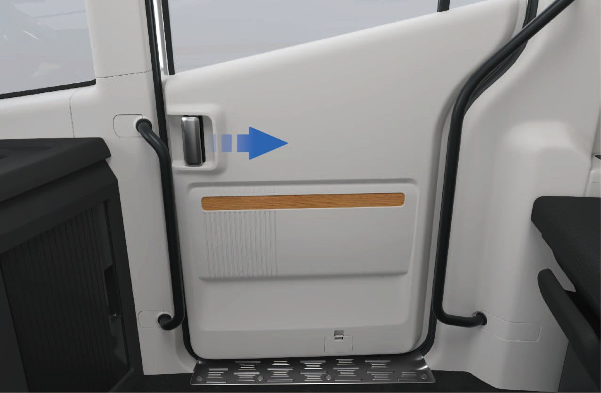
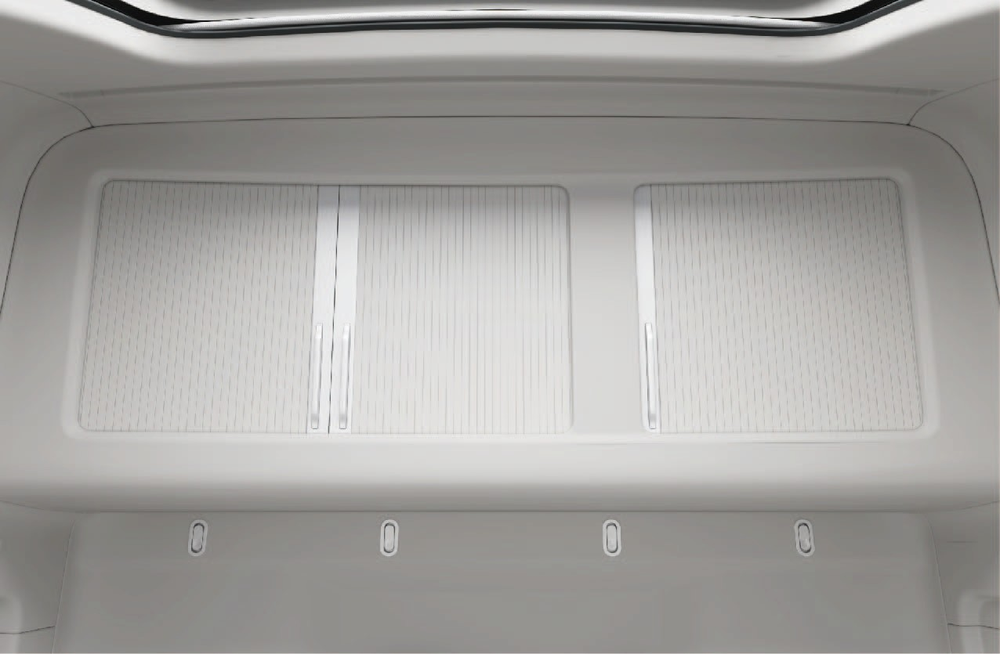
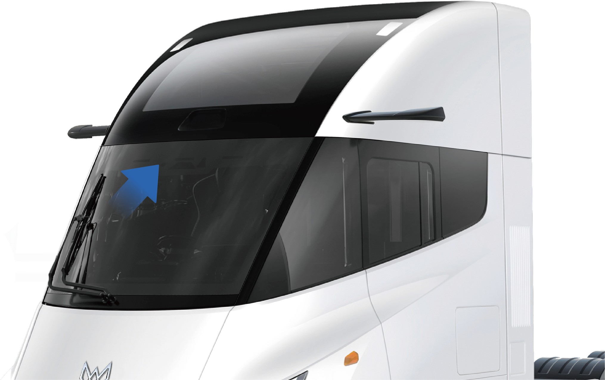
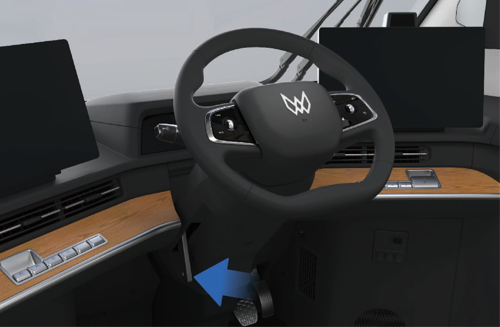
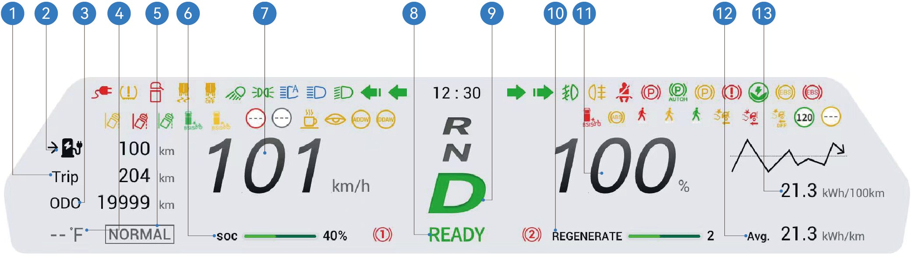
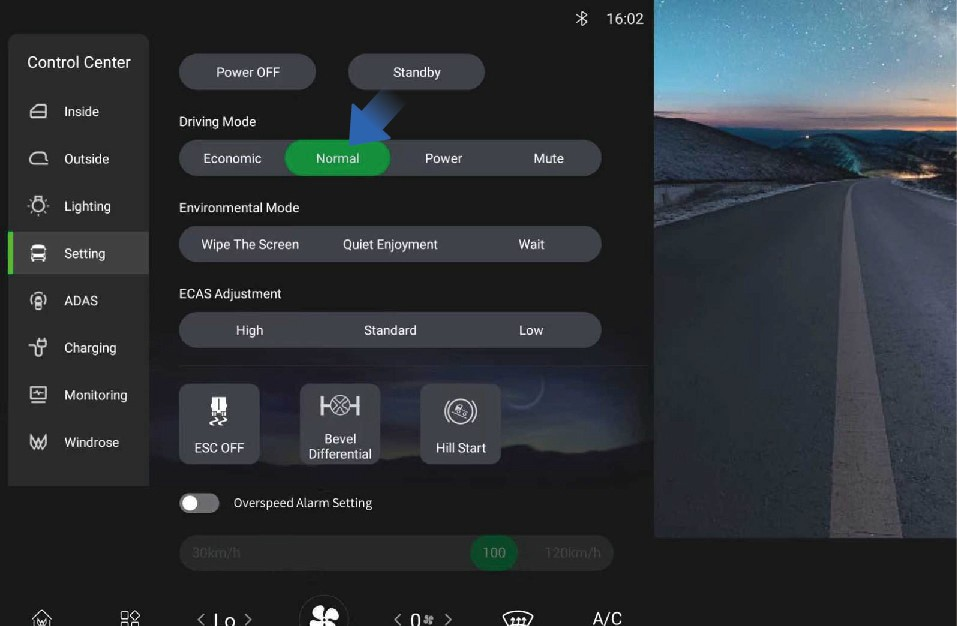

Kære kunde,
Tak fordi du valgte dit Windrose-køretøj.
Læs venligst denne ejerens håndbog omhyggeligt, inden du kører i køretøjet for første gang. Den indeholder vigtige oplysninger om køretøjets funktioner, sikker drift, vedligeholdelseskrav og tekniske specifikationer. Kendskab til disse oplysninger vil bidrage til sikker kørsel og optimal køretøjsydelse.
Da forskellige køretøjskonfigurationer og ekstraudstyr kan variere, kan det leverede køretøj afvige en smule fra beskrivelserne eller illustrationerne i denne håndbog. Windrose forbeholder sig retten til at ændre køretøjets design, specifikationer og udstyr uden forudgående varsel som led i løbende produktforbedringer.
Oplysningerne, illustrationerne og de tekniske data i denne håndbog var korrekte på udgivelsestidspunktet. De er alene vejledende og udgør ikke en kontraktmæssig forpligtelse.
Ingen del af denne ejerens håndbog må reproduceres eller videresendes i nogen form uden forudgående skriftlig tilladelse fra Windrose.
Bemærk: Forsidebillederne og illustrationerne i denne håndbog er kun til reference. Det faktiske køretøjs udseende og specifikationer kan variere.
Indholdsfortegnelse
1. Sikkerhed & Overholdelse
2. Køretøjsoversigt
3. Interiør & Komfort
4. Opladning & Forberedelse
5. Instrumentpanel
6. Kørekontroller
7. Førerassistance
8. Nødprocedurer
9. Vedligeholdelse
10. Tekniske specifikationer
1AOplysninger til brugerne
↑ TopInden du kører
Dette køretøj er en batteridrevet elektrisk trækker.
Under daglig drift og vedligeholdelse skal alle advarsler og instruktioner i denne ejerens håndbog (herefter kaldet "denne håndbog") følges for at undgå skader på køretøjet eller personskader.
Inden du kører for første gang, bør du læse denne håndbog omhyggeligt for at blive fortrolig med køretøjets funktioner og driftskrav. Hvis du støder på problemer under brug, bedes du kontakte Windrose servicelinje.
Ophavsretten til denne håndbog tilhører Windrose. Ingen del af denne håndbog må reproduceres, videresendes eller distribueres uden forudgående skriftlig tilladelse fra Windrose.
Windrose forbeholder sig retten til at opdatere indholdet af denne håndbog uden forudgående varsel som led i løbende produktforbedringer. Se venligst den elektroniske ejerens håndbog, der er tilgængelig på centerskærmen eller i Windrose-mobilappen, for de nyeste køretøjsoplysninger.
Windrose hjemmeside:
Windrose servicelinje:Du kan søge efter "Windrose" i den officielle mobilappbutik for at downloade applikationen.
NoteForkortelser introduceres i formatet "fuldt navn (forkortelse)" ved første omtale. Herefter bruges forkortelsen.
1BBeskrivelse af advarsler
↑ TopInden du kører
Følgende signalord og symboler bruges i denne håndbog:
WarningAngiver en farlig situation, som, hvis den ikke undgås, kan medføre alvorlig personskade eller dødsfald.
Bemærkning
↑ TopNoticeAngiver en situation, der kan forårsage skade på køretøjet eller dets komponenter.
Note
↑ TopNoteGiver supplerende nyttige oplysninger eller driftsvejledning.
Miljøbeskyttelse
↑ TopMiljøbeskyttelseAngiver oplysninger relateret til miljøbeskyttelse eller energieffektivitet.
Asterisk
↑ TopEn asterisk (*) efter et funktionsnavn angiver, at funktionen kun gælder for visse køretøjsmodeller eller valgfrie konfigurationer.
Illustrationsoplysninger
↑ Top
Denne pil angiver den præcise placering af objektet som vist på billedet.
Denne pil angiver bevægelsesretningen for objektet som vist på billedet.
Denne pil angiver rotationsretningen for objektet som vist på billedet.
Denne pil angiver flipperetningen for objektet som vist på billedet.
1CMiljøbeskyttelse
↑ TopInden du kører
Windrose er forpligtet til bæredygtig udvikling og miljøbeskyttelse. Dette køretøj er designet til at forbedre energieffektiviteten og reducere emissioner. Du kan bidrage til miljøbeskyttelsen ved at køre ansvarligt og betjene køretøjet på en energieffektiv måde.
1DDriftssikkerhed
Inden du kører
Overhold altid den maksimalt tilladte totalvægt og aksellast. Overbelast ikke køretøjet, da overbelastning kan medføre skade på køretøjet, tab af kontrol eller personskade.
Udskift enhver sikkerhedssele, der har været udsat for stødkræfter ved en kollision, selv hvis der ikke er synlig skade
Warningtil stede.
Warning
Kør aldrig på frihjul i neutral. Dette fjerner drivmotorbremsningen og kan medføre tab af kontrol over køretøjet.
Inden kørslen skal sædet justeres til den korrekte position. En forkert siddestilling kan forårsage træthed, uventet sædebevægelse eller tab af kontrol over køretøjet. Sørg for, at sædeposition muliggør korrekt brug af sikkerhedsselen.
Sikkerhedsseler er vigtige sikkerhedsanordninger. Alle passagerer skal bære sikkerhedsselerne korrekt, når køretøjet er i bevægelse.
Undgå at vippe sæderyggen for meget tilbage under kørsel. I en nødbremsningssituation kan en forkert siddestilling
reducere sikkerhedsselens effektivitet.
Overskrid ikke 30 km/h i nogen af følgende situationer:
Ind- eller udkørsel fra ikke-motoriserede køretøjsbaner, jernbaneoverskæringer, skarpe sving, smalle veje eller broer.
U-vending, sving eller kørsel ned ad stejl bakke.
Sigtbarheden er mindre end 50 m på grund af tåge, regn, sne, støv eller hagl.
Kørsel på isglatte, snedækkede eller mudrede veje.
Bugsering af et havareret køretøj.
↑ Top
NoticeOprethold en sikker afstand, når du kører i nærheden af et radioastronomisk observatorium. Køretøjer udstyret med radar kan forårsage elektromagnetisk interferens på observatoriets udstyr.
1EOriginale reservedele
Inden du kører
Windrose yder ikke garantidækning for dele under følgende omstændigheder:
Uautoriserede køretøjsmodifikationer, særligt af systemer relateret til kørselsikkerhed (f.eks. højspændingssystemer, elektriske systemer, bremser, styring eller TBOX).
Manipulation med køretøjets OBD-system.
Brug af ikke-godkendte reservedele eller væsker, der medfører sikkerhedsrisici eller skader på køretøjet.
Manglende dokumentation for brug af godkendte væsker i garantiperioden.
Manglende service af køretøjet hos et Windrose-autoriseret servicecenter i overensstemmelse med vedligeholdelseskravene.
1FDatasikkerhed
↑ TopInden du kører
I overensstemmelse med gældende love og regler indsamler og behandler Windrose køretøjsdata, herunder positionsoplysninger, kørselsadfærdsdata, lyd- og videooptagelser samt personoplysninger.
Windrose implementerer passende tekniske og organisatoriske foranstaltninger for at beskytte sådanne data i overensstemmelse med gældende databeskyttelsesforordninger og branchestandarder.
1GKøretøjsmodifikation
Inden du kører
↑ TopDokumentation krævet inden modifikation
Enhver køretøjsmodifikation skal overholde gældende tekniske og lovgivningsmæssige krav. Inden modifikation skal relevant teknisk dokumentation indsendes til Windrose.
Dokumentationen skal som minimum omfatte:
Formål og driftsforhold for det modificerede køretøj.
Totalvægt og aksellaster efter modifikation.
Samlede mål for det modificerede køretøj (herunder arbejdskonfiguration).
Karrosseriets gulvhøjde over terræn.
Monteringsmetode for karrosseri.
Skematisk tegning af hjælperamme.
1HOphugning af køretøj
Inden du kører
↑ TopKøretøjer, der ikke længere opfylder køredygtighedskravene, skal bortskaffes i overensstemmelse med gældende miljøregler.
Ophugning af køretøjer og genbrug af højspændingsbatterier skal udføres af Windrose eller autoriserede genbrugsorganisationer.
WarningForkert bortskaffelse af højspændingsbatterier kan forårsage brand eller miljøskader. Demonter eller bortskaf ikke højspændingsbatterier uden tilladelse.
Genbrug af højspændingsbatteri
Windrose vil teste kapaciteten og tilstanden af højspændingsbatteriet og genbruge højspændingsbatteriet i overensstemmelse med gældende love, regler og markedsforhold på det pågældende tidspunkt.
Genbrug af højspændingsbatteri: Genbrug og efterfølgende behandling skal udføres af Windrose eller en tredjeparts genbrugsorganisation udpeget af Windrose.
Transport af højspændingsbatteri: Højspændingsbatterier transporteres af et professionelt transportfirma. Kontakt det Windrose-autoriserede servicecenter for at underrette en professionel genbrugsorganisation om behandlingen.
Warning
Bortskaf eller smid ikke brugte højspændingsbatterier ud for at undgå utilsigtet brand eller alvorlig forurening af miljøet.
Aflever ikke brugte højspændingsbatterier til andre enheder eller enkeltpersoner. Du vil blive holdt ansvarlig for enhver miljøforurening eller sikkerhedsulykker forårsaget af uautoriseret demontering af højspændingsbatterier.
1IEco-kørsel
Inden du kører
Følgende praksisser vil hjælpe med at maksimere kørerækkevidden og energieffektiviteten:
Oprethold en jævn hastighed og undgå hård acceleration eller opbremsning.
Hold køretøjet i god stand gennem regelmæssig vedligeholdelse.
Kør aldrig på frihjul i neutral gear, da dette vil forårsage utilstrækkelig smøring af E-akslen og kan medføre komponentskader.
1JVinterkørsel
↑ TopInden du kører
Forberedelse til vinterkørsel
Brug høj kvalitets kølevæske baseret på den laveste temperatur, og frysepunktet for kølevæsken skal være lavere end den lokale minimumstemperatur.
Sørg for, at batteriet altid er fuldt opladet for at forhindre batteriet i at fryse ved lave temperaturer.
Brug af kølevæske om vinteren
↑ TopI den kolde årstid eller når køretøjet parkeres på et koldt sted, skal kølevæskens frostbeskyttende egenskaber sikres. Brug den kølevæske, der anbefales af Windrose.
Forholdsregler ved vinterkørsel
Det anbefales at bruge snekæder eller vinterdæk.
Undgå pludselig acceleration, pludselig opbremsning og skarpe sving ved høje hastigheder.
Kør ved lav hastighed på sne- og isdækkede veje for at sikre bedre driftsbremsning.
Oprethold en passende afstand til andre køretøjer (øg afstanden ved kørsel i regn og sne
Efter montering af snekæder skal du starte køretøjet og kontrollere, om kæderne er løse, eller om dækkene ikke er korrekt monteret.
↑ TopWarningNår du bruger snekæder, er det forbudt at overskride den maksimale effektive kørehastighed for at undgå ulykker.
eller på isglatte veje kan bremsevejen øges).
1KBrug af snekæder
Inden du kører
Vær opmærksom på følgende ved brug af snekæder:
Det anbefales at bruge snekæder ved kørsel på veje dækket af tykke lag sne eller is.
Snekæder skal være kompatible med den dækstørrelse og -type, der er monteret på køretøjet.
Monter snekæder på de udvendige dæk på drivakslen (begge sider).
Pas på ikke at beskadige dækkene ved montering eller afmontering af snekæder.
Notice
 Fjern snekæderne, når du kører på lange vejstrækninger uden sne og is.
Fjern snekæderne, når du kører på lange vejstrækninger uden sne og is.Sørg for, at snekæderne ikke kommer i kontakt med eller forstyrrer nogen køretøjskomponenter under kørslen.
Monter og afmonter kun snekæder, når køretøjet er parkeret på jævnt underlag.
1LKørsel i tropiske og varme klimaer
Inden du kører
Kontroller køretøjets tilstand inden kørslen:
Kontroller, at kølevæskeniveauet er inden for det normale område, og undersøg for lækager.
Efterlad ikke brandfarlige genstande (f.eks. lightere, spraydåser, parfumer) på instrumentbrættet eller i direkte sollys i længere perioder. Høje temperaturer kan få trykbeholdere til at sprænge og skabe brandfare.
Under kørslen skal du være opmærksom på følgende:
lamper tændes, skal du straks stoppe kørslen og
kontakte et Windrose-autoriseret servicecenter.
Vær opmærksom på dæktrykket og dæktemperaturen. Hvis dæktrykket eller dæktemperaturen er unormal, skal du straks stoppe kørslen og lade dækkene køle naturligt ned. Afkøl ikke og sænk ikke dækkenes tryk ved at sprøjte vand på dem eller tømme dem for luft, da dette let kan accelerere dækenes ældes og slid og i alvorlige tilfælde kan medføre dæksprængning.
Hvis der opstår dæksprængning under kørsel, skal du straks trykke på advarselsblinkerknappen, holde rattet med hænderne i 9- og 3-timers positionen uden at dreje, og trykke bremsepedalen intermitterende for gradvist at sætte farten ned og advare andre trafikanter.
Overvåg dæktrykket og dæktemperaturen.
Hvis enten er unormal, skal du stoppe køretøjet, så snart det er sikkert, og lade dækkene køle naturligt ned. Køl ikke dækkene med vand eller ved at tømme dem for luft, da dette kan accelerere dækenes aldring og øge risikoen for dæksprængning.
Hold øje med indikatorer og advarselslys i instrumentpanelet. Hvis køretøjsrelaterede fejllys eller advarselslys
Kørsel på ujævne og glatte veje
Inden du kører
Vær opmærksom på følgende ved kørsel på ujævne og glatte veje:
På ujævne veje skal du sætte farten ned for at forbedre komforten og minimere slid på fjeder- og stødabsorberingskomponenter.
På glatte veje skal du sætte farten ned og bremse forsigtigt for at forhindre tab af trækkraft og sidegliden.
Hvis køretøjet begynder at glide sidelæns på våde eller glatte overflader, skal du sætte farten jævnt ned ved hjælp af driftsbremsen og undgå pludselige styrebevægelser.
1MKørsel på ramper
↑ TopInden du kører
Forholdsregler ved kørsel op ad bakke
Hvis køretøjet ruller tilbage ved start i en bakke, skal du straks trykke bremsepedalen i bund, aktivere den elektroniske parkeringsbremse og derefter genstarte kørselsprocessen.
Ved klatring skal du opretholde en lav og jævn hastighed. Brug speederen progressivt og undgå pludselig acceleration eller bremsning.
Forholdsregler ved kørsel ned ad bakke
Sæt farten ned inden nedkørslen, så køretøjet starter nedkørslen ved en kontrolleret hastighed.
Kør aldrig på frihjul ned ad bakke i neutral. Dette fjerner drivmotorbremsningen og kan medføre tab af kontrol over køretøjet.
Inden nedkørslen skal du sikre dig, at bremsesystemet fungerer korrekt. Hvis der mistænkes en fejl, skal problemet afhjælpes inden fortsat kørsel.
Undgå skarpe styrebevægelser på nedadgående veje for at reducere risikoen for væltning.
På lange nedkørsler skal du undgå kontinuerlig bremsning. Brug passende hastighedskontrol og bremseteknikker for at forhindre overophedning af bremserne og potentielt bremsefald.
1NIndberetning af sikkerhedsmangler
↑ TopInden du kører
Hvis du har mistanke om, at køretøjet har en sikkerhedsrelateret defekt, skal du stoppe køretøjet på et sikkert sted hurtigst muligt og straks kontakte Windrose kundesupport eller en Windrose-autoriseret servicestation.
Windrose kan udstede sikkerhedsmeddelelser, servicekampagner eller tilbagekaldelser, hvor det kræves af gældende love og regler. I Den Europæiske Union håndteres tilbagekaldelser af køretøjssikkerhed under EU's markedsovervågnings- og typegodkendelsesramme og koordineres med de relevante nationale typegodkendelses- og markedsovervågningsmyndigheder i de berørte medlemsstater. Følg alle sikkerhedsinstruktioner og servicekampagnekrav fra Windrose.
Windrose servicelinje: [EU-KONTAKTOPLYSNINGER BEKRÆFTES]
Windrose servicewebsted: [EU-SERVICEWEBSTED BEKRÆFTES]
Autoriseret servicenetværk: [EU-SERVICENETVÆRK BEKRÆFTES]
2AOversigt over køretøjets udvendige dele
Køretøjsidentifikation

Forreste blinklys/kørelys
Parkeringslys 3. Panoramatag
4. Sideværktøjskasse 5. Ladestik

|
|
|
|
|
|
|---|---|---|---|---|---|
|
|
|
|
|
|
|
|
|
|
|
|
2BOversigt over køretøjets indvendige dele
Køretøjsidentifikation

|
|
2. |
|
3. |
|
|---|
|
|
2. |
|
3. |
|
|---|---|---|---|---|---|
|
|
5. |
|
6. |
|
|
|
8. |
|
9. |
|
|
|
11. |
|
12. |
|
|---|---|---|---|---|---|
|
|
14. |
|
15. |
|
2CKøretøjets typeskilt og stelnummer
Køretøjsidentifikation
Køretøjets typeskilt

Køretøjets typeskilt er placeret på den højre skydedørsramme (C-søjle) på køretøjet.
Typeskiltet viser følgende oplysninger:
Producentens navn
Typegodkendelsesnummer for hele køretøjet (WVTA)
Køretøjsidentifikationsnummer (stelnummer)
Tilsigtet registreret maksimalt tilladt masse
Teknisk tilladt maksimal lastvægt
Andre lovpligtige oplysninger krævet af gældende regler
Køretøjsidentifikationsnummer

Køretøjsidentifikationsnummeret (stelnummeret) er præget på den højre sidebagbjælke, nær centerlinjen for forakslen.
2DPlacering af motorens typeskilt og kode
Køretøjsidentifikation

Placering af motorens typeskilt
Placering af motorens serienummer
Notice
Motorens aftryk (impression) af serienummeret leveres sammen med motordokumentationen, når køretøjet forlader fabrikken. Opbevar venligst dette dokument til fremtidig reference.
Da traekmotorer leveret af forskellige producenter kan variere, kan oplysningerne på motorens typeskilt og relateret dokumentation være forskellige. Se venligst det faktiske produkt.
Mikrobølge-/RF-transparens af forrude Køretøjsidentifikation
Forruden på dette køretøj indeholder ikke metalliske belægninger, der forstyrrer radiofrekvens (RF) signaltransmission.
Elektroniske bompengeenheder (ETC), vejafgiftsmærkater, telematikudstyr eller andre RF-baserede enheder kan derfor installeres på forruden i overensstemmelse med de monteringsinstruktioner, der leveres af udstyrsproducenten.
3AElektrisk skydedør
↑ TopAdgang til køretøjet
Der er monteret en elektrisk skydedør på højre side af køretøjet. Døren kan åbnes eller lukkes på flere måder.
Betjeningsvejledning
Udvendig betjening

↑ TopElektrisk: Når køretøjet er låst op, skal du trykke på den flydende dørhåndtagsafbryder. Den elektriske skydedør åbner eller lukker automatisk.
Manuel: Når køretøjet er låst op:
1. Tryk på den forreste ende af det flydende dørhåndtag for at frigøre det.
2. Træk håndtaget udad for at låse skydedøren op.
3. Skyd døren manuelt åben.

Ind i køretøjet

Når den elektriske skydedør er åben, skal du stige ind i førerhuset med følgende trin:
Vend dig mod døren og grib fat i venstre og højre grebshåndtag med begge hænder.
Sæt den ene fod på det nedre trin og træk dig selv op.
Sæt den anden fod på det øvre trin.
Flyt den nedre hånd til en højere position på grebshåndtaget.
Gå ind i køretøjets førerhus.
At glide eller falde ved ind- eller udstigning fra køretøjet kan medføre personskade.
Vådt eller snavset fodtøj øger risikoen for at glide betydeligt. Vær særlig forsigtig ved ind- og udstigning fra førerhuset.
Oprethold altid tre-punkts kontakt med køretøjet ved ind- og udstigning fra førerhuset (to hænder og en fod, eller to fødder og en hånd).
Hop aldrig ned fra køretøjet.
Indvendig betjening
Når køretøjet er låst op:

Vælg "Kontrolcenter" på køretøjets informationsskærm.
Skift til grænsefladen "Indvendig".
Tryk på kontrolknappen "Skydedør" for at åbne eller lukke den elektriske skydedør
Elektrisk: Når køretøjet er låst op, skal du trykke på afbryderen placeret på B-søjlens panelbeklædning foran skydedøren for at åbne eller lukke døren.

Manuel: Hvis skydedøren er lukket, skal du trække det indvendige håndtag bagud for at låse døren op og skyde den manuelt åben.
Hvis skydedøren er åben, skal du holde det indvendige håndtag og skyde døren fremad for at lukke den.
Nødsituationer inde i køretøjet


Hvis den elektriske afbryder eller det indvendige håndtag svigter:
Fjern det nedre dæksel fra skydedørens beskyttelsespanel.
Træk i nødåbningskablet for manuelt at låse skydedøren op.
Central låseafbryder

Når skydedøren er lukket:
Tryk på centrallåsningsafbryderen placeret i knapgruppen på højre side af instrumentpanelet for at låse skydedøren.
Statusindikatoren lyser, når døren er låst.
Tryk på afbryderen igen for at låse døren op.
Manuel tilstand for skydedøren

Den manuelle tilstand kan aktiveres eller deaktiveres via køretøjets informationsskærm:
Vælg "Kontrolcenter".
Skift til grænsefladen "Overvågning".
Vælg "Manuel tilstand for skydedør".
↑ TopNår manuel tilstand er aktiveret, kan skydedøren kun betjenes manuelt.
Klemmeforebyggelsesfunktion for skydedøren
Under automatisk lukning vil skydedøren stoppe med at lukke og automatisk vende tilbage til åben position, hvis den registrerer en forhindring.
Forholdsregler
↑ TopWarningKlemmeforebyggelsesfunktionen er kun aktiv under elektrisk lukkeoperaion. Den er ikke aktiv, når døren betjenes manuelt.
3BSikkerhedssele
↑ TopAdgang til køretøjet
Fører- og forsædet er udstyret med sikkerhedsseler. Sikkerhedsseler hjælper med at forebygge eller reducere skader på passagererne ved nødbremning eller kollision.
Betjeningsvejledning
↑ TopFørerens sikkerhedssele er placeret på venstre side af førersædet og kan trækkes direkte ud for at spændes.
Forsædepassagerens sikkerhedssele er placeret på højre side af forsædet. Når forsædet er besat, skal du minde passageren om at bære sikkerhedsselen korrekt, inden køretøjet sætter i gang.
Korrekt brug af sikkerhedssele
Overhold følgende retningslinjer ved brug af sikkerhedssele:
• Den nedre del af selen skal ligge lavt over bækkenet (hofterne) og ikke over maven.
• Selen skal sidde tæt op ad kroppen uden snoninger.
• Skulderdelen skal gå hen over midten af skulderen.
• Placer aldrig selen hen over nakken eller under armen.
• Efter at have spændt sikkerhedsselen skal du trække skulderdelen opad for at sikre, at den nedre del sidder godt fast over hofterne.
• Kontroller altid, at sikkerhedsselen er korrekt låst, inden du kører.
Påmindelse om sikkerhedssele
Hvis førerens sikkerhedssele ikke er spændt, lyser advarselslyset for sikkerhedsselen på instrumentpanelet.
Når føreren spænder sikkerhedsselen, slukker advarselslyset.
Rengøring af sikkerhedsseler
Hvis en sikkerhedssele bliver snavset, skal den rengøres med mild sæbe og vand.
1. Træk sikkerhedsselen helt ud og hold den på plads.
2. Påfør en mild sæbeopløsning på det forurenede område.
3. Rengør forsigtigt selen med en blød børste eller klud.
4. Skyl med rent vand om nødvendigt.
5. Lad sikkerhedsselen tørre helt, inden den rulles tilbage.
Rul ikke en våd sikkerhedssele tilbage i oprollermekanismen.

Forholdsregler
WarningAlle passagerer skal bære sikkerhedsseler korrekt, mens køretøjet er i bevægelse. Korrekt brug af sikkerhedsseler reducerer risikoen for personskade ved nødbremning eller kollision betydeligt.
Manglende brug af sikkerhedssele eller forkert brug kan medføre alvorlig personskade eller dødsfald.
Sid ikke i områder, der ikke er udstyret med sæde og sikkerhedssele.
Brug ikke en sikkerhedssele, der er beskadiget eller defekt.
Hver sikkerhedssele er designet til én passager. Del aldrig en sikkerhedssele med en anden person.
Placer aldrig skulderdelen rundt om nakken eller under armen.
Fjern, modificer eller piller ikke ved sikkerhedsselesystemet.
Brug ikke blegemiddel, farvestoffer eller kemiske opløsningsmidler til at rengøre sikkerhedsseler, da disse kan svække seleematerialet.
3CElruder
↑ TopAdgang til køretøjet
Sideruderne kan betjenes ved hjælp af rudeafbryderne placeret på venstre side af instrumentpanelet eller på køjens betjeningspanel.
Køretøjet er udstyret med en automatisk rudelukningsfunktion. Når køretøjet er slukket og låst, lukker ruderne automatisk, hvis de ikke allerede er fuldt lukket.
Betjeningsvejledning
Ruderegulering via kombinationsknap

Venstre rudeafbryder: Tryk og hold op- og ned-afbryderknapperne for at styre åbningen af venstre rude; Tryk og slip den venstre rudeafbryderknap op og ned for at hæve eller sænke venstre rude med ét tryk.
Højre rudeafbryder: Tryk og hold op- og ned-afbryderknapperne for at styre åbningen af den højre rude; Tryk og slip den højre rudeafbryderknap op
og ned for at hæve eller sænke den højre rude med ét tryk.
Ruderegulering via køjeafbryder

Venstre rudeafbryder: Tryk og hold op- og ned-
↑ Topautomatisk lukke eller åbne ruden helt (ét-tryksbetjening).
Forholdsregler
Warning
Inden ruderne lukkes, er det vigtigt at sikre, at ingen passagerer stikker nogen del af kroppen ud, da dette ellers kan forårsage alvorlig personskade.
Betjen ikke ruderne ved høje hastigheder.
NoteFjern sne og is fra rudeoverfladen rettidigt for at undgå fastfrysning under bevægelse af ruden eller for at forhindre, at ruden ikke kan åbnes og lukkes normalt.
afbryderknapperne for at styre åbningen af venstre rude;
Tryk hurtigt og slip begge knapper fra hinanden for automatisk at lukke eller åbne ruden helt (ét-tryksbetjening).
Højre rudeafbryder: Tryk og hold op- og ned-afbryderknapperne for at styre åbningen af den højre rude; Tryk hurtigt og slip begge knapper fra hinanden for automatisk at
3DPrivatgardin til køje*
↑ TopAdgang til køretøjet
Køjeområdet er udstyret med privatgardinskinneanlæg, der giver mulighed for at montere privatgardiner. Gardinerne hjælper med at give privatliv og reducere sollys i køjeområdet.
* Denne funktion er kun tilgængelig på visse køretøjsmodeller.
Betjeningsvejledning
Privatgardinskinne til køje
Gardinskinneanlæggene er monteret i loftet over køjeområdet. Privatgardiner kan monteres på skinneanlæggene efter behov.
Privatgardin til køje*

↑ TopNår det er monteret, kan privatgardinerne trækkes for hen over køjeområdet for at give privatliv og blokere sollys ved hvile.
Forholdsregler
↑ TopNoticeTræk ikke i privatgardinerne med stor kraft for at forhindre dem i at falde ned.
3EPanoramatag

↑ TopAdgang til køretøjet
Køretøjet er udstyret med et panoramatag og en elektrisk solafskærmning. Panoramataget er fast og kan ikke betjenes. Det lader naturligt lys ind i førerhuset og giver udsyn udendørs. Solafskærmningen kan åbnes eller lukkes for at blokere sollys efter behov.
Betjeningsvejledning

Panoramataggets solafskærmning kan betjenes via køretøjets informationsskærm.
Vælg "Tagsolskærm" i grænsefladen "Indvendig" på køretøjets informationsskærm.
Tryk og hold TIL/FRA-knappen for at åbne eller lukke solafskærmningen. Slip knappen for at stoppe bevægelsen.
Tryk kortvarigt og slip TIL/FRA-knappen for at aktivere automatisk drift, som bevæger solafskærmningen fuldt åben eller fuldt lukket.
Forholdsregler
Notice
Træk ikke manuelt i panoramataggets solafskærmning for at undgå skader.
Rids ikke panoramataggets glas, solafskærmning eller klæbebånd rundt om glasset med skarpe genstande.
3FElektrisk solafskærmning til forrude
↑ TopAdgang til køretøjet

Når du kører mod stærkt sollys, kan den elektriske solafskærmning til forruden bruges til at reducere blænding og forbedre kørekomforten.
Betjeningsvejledning
Den elektriske solafskærmning til forruden kan betjenes ved hjælp af kontakterne placeret på venstre side af instrumentpanelet.

Sænk solafskærmningsafbryder
Tryk og hold denne afbryder for at sænke forrude-solafskærmningen. Slip afbryderen for at stoppe bevægelsen.
Hæv solafskærmningsafbryder
Tryk og hold denne afbryder for at hæve forrude-solafskærmningen. Slip afbryderen for at stoppe bevægelsen.
Forholdsregler
↑ TopNoticeTræk ikke manuelt i den elektriske solafskærmning til forruden for at undgå skader.
NoteSørg for, at solafskærmningen ikke forstyrrer det effektive udsyn ved brug.
3GIndvendig køje
↑ TopAdgang til køretøjet
I køretøjet er der køjer til hvile for fører og passagerer.
Betjeningsvejledning
Det øvre højre hynde på køjen kan manuelt vippes og foldes til venstre for at gøre plads til forsædet. Hvis der er monteret en højdejusterbar køje på højre side af køretøjet, kan det øvre hynde på den højre køje manuelt hæves og fastgøres, så det kan bruges som køjehovedstøtte tilgængelig i flere gear. For at sænke køjen kan du hæve det øvre hynde på den højre køje til den højeste position og derefter slippe det.
Beskyttelsesnet til køje


Køretøjet har et beskyttelsesnet til køjen. Inden du bruger køjen, skal du folde beskyttelsesnettet ud som vist på figuren og derefter indsætte de 8 tapper i venstre, højre og bagvæg på køjen i de 8 spænder i venstre, højre og bageste ende af beskyttelsesnettet for at låse nettet på plads.
Notice
Vær forsigtig med ikke at klemme fingrene, når du folder forsædet eller hæver det øvre hynde på køjen.
Monter venligst beskyttelsesnettet korrekt inden brug af køjen; Hvis beskyttelsesnettet ikke bruges, er der risiko for, at passagerer falder ned fra køjen, hvilket øger sandsynligheden for personskader og dødsfald ved ulykker.
3HBakspejl
↑ TopAdgang til køretøjet
Fysiske bakspejle er monteret på køretøjet for at give føreren et effektivt udsyn under kørsel.
Du kan justere de fysiske bakspejle ved at vælge "Kontrolcenter" og skifte til "Udvendig" grænsefladen på køretøjets informationsskærm på instrumentpanelet.

Venstre/højre justering
Klik for at vælge og justere de venstre/højre fysiske bakspejle separat.
Opvarmning af bakspejl
Klik for at vælge denne indstilling, og de fysiske bakspejle vil
blive opvarmet for at afrose og afdugge. Klik igen for at slukke, eller det
vil automatisk slukke efter køretøjets slukning.
Warning
Juster altid bakspejlene korrekt inden kørsel, da denne adfærd er strengt forbudt under kørsel. Manglende overholdelse af dette krav kan forårsage personskade eller dødsfald og materielle skader.
Tildæk ikke sensoren. Snavs, is og sne, der sidder fast på kameraet, kan forringe dets funktion og ydeevne. Vær altid opmærksom på kameraets og dets omgivelsers renlighed for at undgå trafikulykker.
3IKopholder
↑ TopAdgang til køretøjet
Kopholdere er placeret på henholdsvis venstre og højre side af instrumentpanelet samt på armlænet på forsædet, så du kan placere en vandflaske eller drikkevaredunk i den tilsvarende kopholder.

Kopholdere (venstre)


Kopholdere (højre) • Kopholder på højre side af forsædet
Forholdsregler
WarningPlacer ikke varme drikkevarer i kopholdere, der ikke er tæt lukket. Ellers kan de spildes, når køretøjet rykker, og forårsage personskade eller skade på køretøjskomponenter.
Note
Kun drikkevaredunke, der kan forsegles og har passende størrelse, kan placeres i kopholdere for at forhindre spild.
Tving ikke en uegnet beholder ind i kopholdere, da dette ellers kan beskadige beholderen eller køretøjet.
3JAskebæger
↑ TopAdgang til køretøjet
Der er et askebæger i køretøjet til opbevaring af cigaretskodder og aske.
Betjeningsvejledning

↑ TopAskebægeret er monteret i kopholdere på højre side af instrumentpanelet. Du kan placere askebægeret på andre positioner efter dine individuelle behov.
Forholdsregler
Warning
Ryg ikke under kørsel for at undgå ulykker eller overtrædelse af gældende regler.
Inden cigaretskodder kastes i askebægeret, skal du sikre dig, at cigaretskodder er slukkede for at undgå brandulykker forårsaget af brændende skodder.
Når du installerer askebægeret, skal du sikre dig, at det er sikkert installeret og fastgjort for at forhindre, at askebægeret ryster i køretøjet eller løsner sig fra fastgørelsesanordningen.
↑ TopNoteNår du er færdig med at bruge askebægeret, skal du sørge for at dække det til for at undgå at spilde cigaretskodder eller aske.
3KSideværktøjskasse
↑ TopAdgang til køretøjet

Førerens værktøj til køretøjet opbevares i værktøjskassen på venstre side af køretøjet til brug i nødsituationer.
Betjeningsvejledning

↑ TopDu kan låse værktøjskassen op ved at vælge "Kontrolcenter", skifte til "Udvendig" grænsefladen og klikke på knappen "Lås værktøjskasse op" på køretøjets informationsskærm på instrumentpanelet. Værktøjskassen lukkes manuelt udefra på køretøjet.
Der er en lampe i værktøjskassen, der automatisk tændes, når værktøjskassen åbnes, og slukker automatisk, når den lukkes.
Forholdsregler
↑ TopWarningHold værktøjskassen lukket under kørsel for at undgå ulykker.
3LIndvendig opbevaringsenhed
↑ TopAdgang til køretøjet
Der er flere opbevaringsenheder i køretøjet, så du kan opbevare genstande i forskellige størrelser.
Betjeningsvejledning

Der er en opbevaringsboks nederst til højre på instrumentpanelet, hvor du kan opbevare genstande.

Opbevaringsboks på højre side af forsædet
Opbevaringsboks under forsædet
Opbevaringsboks under køjen
↑ TopOpbevaringsbokse kan findes under køjen og forsædet. Du kan trække dem ud for at bruge dem. Der er en opbevaringsboks på højre side af forsædet, hvor du kan opbevare mindre genstande.


Der er en opbevaringsboks over køjen. Lampen i opbevaringsboksen tænder automatisk, når opbevaringsboksen åbnes, og slukker automatisk, når opbevaringsboksen lukkes. Den maksimale bæreevne for den store opbevaringsboks over køjen er 25 kg, og for den lille opbevaringsboks er det 15 kg.
På køretøjer uden AR-HUD er der en opbevaringsboks placeret ved AR-HUD-positionen, hvor du kan placere mindre genstande. Placer kun små og lette genstande og ikke skarpe genstande i boksen for at undgå skader på boksens indre belægning.
Forholdsregler
↑ TopNoteSørg for, at opbevaringsboksene er lukket inden kørsel for at undgå skader på genstande eller personskade, når genstande falder ned fra en højde under kørsel.
3MNetpose
↑ TopAdgang til køretøjet
Der er en netpose på den nedre venstre side af køretøjet til opbevaring af mindre genstande.
Betjeningsvejledning

Netpose
Forholdsregler
NotePlacer ikke skarpe genstande i netposen for at undgå skader på netposen eller personskade på føreren.
3NAvisenhed
↑ TopAdgang til køretøjet
Der er en avispose på bagsiden af førersædet, som kan bruges til at opbevare småting som aviser og kort.
Ved siden af køjen er der en avisenhed, hvor du kan opbevare aviser, tidsskrifter og andre genstande.


Avispose over køje • Avispose på højre side af
køjen
Forholdsregler
↑ TopNoteDen avisenheden, der er fastgjort til køjen, kan kun indeholde genstande såsom aviser og tidsskrifter. Småting, der er placeret i posen, kan ikke tages ud igen.
3OKnage
↑ TopAdgang til køretøjet
Der er en knage over køjen til ophæng af tøj.
Betjeningsvejledning

Knage
Forholdsregler
NoteKnagen kan kun holde lette beklædningsgenstande eller hatte o.l. Hæng ikke tunge genstande op.
3PHængeenhed
↑ TopAdgang til køretøjet
Der er en hængeenhed på siden af køjen, som kan bruges til at hænge håndklæder eller smål beklædningsgenstande op.
Betjeningsvejledning

Hængeenhed
Forholdsregler
NoteHængeenheden kan kun bruges til at hænge tørre håndklæder eller små beklædningsgenstande op. Hæng ikke tunge genstande op for at undgå at beskadige hængeenheden og forårsage ulykker.
3QUSB-opladning
↑ TopAdgang til køretøjet
Køretøjet er udstyret med USB-porte placeret henholdsvis på venstre instrumentpanel og armlænet på forsædet. USB-portene kan bruges til at oplade mobiltelefoner med en opladningseffekt på 15W. Både type-C og type-A porte understøttes.
Betjeningsvejledning

Venstre USB-port på instrumentpanel

USB-port på forsædepassagerens armlæn
Forholdsregler
↑ TopWarningSpild aldrig væske ved porten.
NoticeTilsluttede enheder kan blive varme under opladning. Sørg for, at de varme enheder ikke udgør en fare for personale eller forårsager materielle skader.
3RTrådløs telefonopladning
↑ TopDet højre instrumentpanel er udstyret med en trådløs opladningsenhed, som kan bruges til at oplade mobiltelefoner trådløst med en opladningseffekt på 15W.
Forholdsregler
↑ TopWarningPlacer ikke genstande med metaldele i det trådløse opladningsinduktionsområde sammen med mobiltelefonen, da genstande med metaldele ellers kan blive opvarmet eller beskadiget og forårsage en sikkerhedsulykke.
Placer mobiltelefonen med forsiden opad i det
trådløse opladningsinduktionsområde ved opladning.
Betjeningsvejledning

Trådløst opladningsområde til telefon
Notice
- Inden du aktiverer telefonens trådløse opladningsfunktion, skal du sørge for, at nøglekortet, kreditkortet eller andre magnetiske genstande holdes væk fra opladningsområdet.
Efterlad ikke en mobiltlefon uden opsyn i køretøjet til opladning for at undgå sikkerhedsrisici.
Spild ikke væsker i det trådløse opladningsområde for at undgå skader på de elektroniske komponenter.
Placer ikke tunge genstande i opladningsområdet for at undgå skader på mobiltelfonens trådløse opladningsmodul.
Note
Det er normalt, at mobiltelefonen oplever en temperaturstigning under opladning.
Når mobiltelefonen er varm, kan køretøjet stoppe opladningen for at beskytte mobiltelefonens batteri, og opladningen genoptages ikke, før mobiltelefonen er kølet ned.
Den trådløse opladningsfunktion understøtter kun mobiltelefoner, øretelefoner, stereoudstyr og andre enheder, der opfylder den trådløse opladningsprotokol.
Placer enheden i midten af opladningsområdet ved brug af den trådløse opladningsfunktion for at forhindre, at enheden ikke oplades eller oplades ineffektivt.
Kun 1 mobiltelefon kan oplades ad gangen.
Hvis telefonens etui er lavet af specielt materiale (f.eks. et etui med en metalbøjle/metalmagnet) eller er for tykt, kan det forårsage opladningsfejl.
Når køretøjet kører på ujævne veje, kan den trådløse opladning af mobiltelefonen afbrydes periodisk.
Hvis mobiltelefonen ikke kan oplades korrekt, skal du altid sikre dig, at mobiltelefonen er placeret i det trådløse opladningsområde uden fremmedlegemer, eller vente på, at det trådløse opladnings-
↑ Topinduktionsområde er kølet ned inden næste forsøg. Hvis opladning
stadig er umulig, bedes du kontakte et Windrose-autoriseret servicecenter rettidigt.
3SStikkontakt
↑ TopAdgang til køretøjet
Det nedre venstre hjørne af køjen er udstyret med 2 DC-strømforsyninger konfigureret som:
Nominel spænding: 24V
Maksimal strøm: 15A Nominel spænding: 12V
Maksimal strøm: 10A
Det nedre venstre hjørne af køjen er udstyret med én 230V-inverter og stikkontakt konfigureret som følger:
Nominel effekt: 1000W
Nominel spænding: AC230V
Udgangsfrekvens: 50Hz ± 0,5Hz
Betjeningsvejledning

DC-strømforsyning
AC-strømforsyning

24V påhængsstrømstik: Maksimal sikker driftseffekt: 2 kW
Forholdsregler
↑ TopNotice230V-inverteren kan kun bruges, når køretøjet er tilsluttet højspænding. Hvis køretøjet er slukket, er kun 12V-strøm eller 24V-strømforsyning tilgængelig.
3TLoftlampe

Indvendig belysning
Loftlampen kan tændes og slukkes på to måder.
Tænd-afbryder til loftlampe
 Sluk-afbryder til loftlampe/indvendig lampe
Sluk-afbryder til loftlampe/indvendig lampe
Tryk på den øvre tænd-afbryder til loftlampen for at tænde den; Tryk kortvarigt og slip den nedre sluk-afbryder til loftlampe/indvendig lampe for at slukke loftlampen, og tryk og hold den øvre sluk-afbryder til loftlampe/indvendig lampe for at slukke loftlampen.
Du kan desuden tænde/slukke loftlampen ved at vælge "Kontrolcenter", skifte til grænsefladen "Belysning" og klikke på knappen "Loftlys" på køretøjets informationsskærm på instrumentpanelet.
Tænd/sluk ved dør åbning/lukning


Du kan aktivere/deaktivere funktionen tænd/sluk ved dør åbning/lukning ved at vælge "Kontrolcenter", skifte til grænsefladen "Belysning" og klikke på knappen "Styret af dør" på køretøjets informationsskærm på instrumentpanelet. Når denne funktion er aktiveret, tænder eller slukker loftlampen, når døren åbnes eller lukkes.
Forholdsregler
↑ TopWarningBrug ikke forreste indvendige lamper ved kørsel om natten. Stærkt lys inde i køretøjet kan reducere synligheden ved natlig kørsel og muligvis forårsage en kollision.
Betjeningsvejledning
3UVelkomstlys
↑ TopKøretøjet har en velkomstlysfunktion.
Indvendig belysning
Du kan aktivere/deaktivere velkomstfunktionen for nærlys ved at vælge "Kontrolcenter", skifte til grænsefladen "Belysning" og klikke på knappen "Velkomst med nærlys" på køretøjets informationsskærm på instrumentpanelet.
Fulgt-hjem-funktion
3VLæselampe
↑ Top
Indvendig belysning
Førerhuset og køjen er udstyret med læselamper, der kan tændes, når der er brug for læsebelysning.
Betjeningsvejledning
↑ TopLæselampe til fører
Du kan aktivere/deaktivere funktionen fulgt-hjem ved at vælge "Kontrolcenter" og skifte til grænsefladen "Belysning" på køretøjets informationsskærm på instrumentpanelet.
Forholdsregler
NoteDu kan indstille varigheden af fulgt-hjem-funktionen efter behov.
Læselampe til fører
Du kan aktivere/deaktivere læselampen ved at vælge "Kontrolcenter", skifte til grænsefladen "Belysning" og klikke på knappen "Læselys" på køretøjets informationsskærm.
Læselampe til køje


↑ TopDer er en læselampe over køjen, som kan trækkes ud ved at trykke på den forreste ende for at tænde afbryderen. Denne lampe tændes automatisk, når den trækkes ud, og det er muligt at justere lampevinklen efter behov. Sæt læselampen tilbage på plads, og den slukker automatisk.
Forholdsregler
↑ TopNoteTænd ikke læselamper ved svagt omgivende lys
3WStemningslys
↑ Top
Indvendig belysning
under kørsel. Ellers kan forruden have refleksioner,
der resulterer i uklart udsyn til vejen foran og yderligere forårsage en sikkerhedsulykke.
Køretøjet har stemningslys, der kan skifte mellem en række farver og følge musikrytmen.
Betjeningsvejledning

↑ TopDu kan justere stemningslyset ved at vælge "Kontrolcenter", skifte til grænsefladen "Belysning" og vælge knappen "Stemningslys" på køretøjets informationsskærm på instrumentpanelet.
Du kan justere stemningslyset efter dine egne behov og præferencer.

Forholdsregler
↑ TopNoteSørg ved brug af stemningslys for, at lysfarven ikke forstyrrer førerens udsyn og sikrer trafiksikkerheden.
3XKlimaanlæg
↑ TopKlimaanlæg i køretøjet
Du kan indstille og styre klimaanlægget via klimaanlægsgrænsefladen på køretøjets informationsskærm eller via klimaanlæggets betjeningspanel øverst til højre på køjen i køretøjet.
Grænsefladen for forreste klimaanlæg
I klimaanlægsgrænsefladen på køretøjets informationsskærm kan du indstille luftmængden, temperaturen eller luftretningen for det forreste og bagerste klimaanlæg ved at skifte mellem det forreste og bagerste klimaanlægs grænseflader.

Åbn klimaanlægs grænsefladen 6. Synkroniseringsafbryder for køretøjets klimaanlægstemperatur
11. Fodrum- og afrostningsmode
Afrostnings-/afdugningsafbryder til forrude
Temperaturen på forreste klimaanlæg 7. Ansigte og fodrum mode 12. Fodrum mode 17. Duftgrænseflade*
Sluk-afbryder for forreste klimaanlæg 8. Ansigtsblæsningsmode 13. Luftmængde forreste klimaanlæg
Kompressorafbryder 9. Grænsefladen forreste klimaanlæg 14. ECO-mode-afbryder
Automatisk mode-afbryder 10. Grænsefladen bagerste klimaanlæg 15. Intern/ekstern cirkulations-
afbryder
Grænsefladen for bagerste klimaanlæg
|
|
|
|
|---|---|---|---|
|
|
|
|

Betjeningsvejledning
|
|
|
|---|---|---|
|
|
|
|
|
|
|
|
|
|
|
|
|
|
|
|
|


|
|
|
|---|---|---|
|
|
|
|
|
|
|
|
|
|
|
|
|
|


|
|
|
|---|---|---|
|
|
|
|
|


Klimaanlægets betjeningspanel
Klimaanlægets betjeningspanel styrer kun de tilsvarende funktioner for det bagerste klimaanlæg.

Kompressorafbryder for bagerste
Afbryder for bagerste klimaanlæg
Temperaturforøgelse for bagerste klimaanlæg
Luftmængde+ for bagerste klimaanlæg
Luftmængde– for bagerste klimaanlæg
Temperaturnedsættelse for bagerste klimaanlæg
Forholdsregler
Warning
Inden kørslen skal alle ruder være fri for is, sne eller fugt, da dit udsyn ellers vil blive spærret og kan medføre en trafikulykke.
Undlad at anvende den interne cirkulationsfunktion i lang tid, da dette kan medføre, at luften i køretøjet ikke er frisk og ruderne dugger.
Note
At slukke for kompressorafbryderen slukker ikke klimaanlægssystemet, og varmesystemet kan stadig være i drift.
Når du tænder for klimaanlægssystemet for første gang i meget fugtige omgivelser, er det normalt, at forruden dugger let.
Hvis klimaanlægssystemet arbejder højlydt, kan du manuelt nedjustere luftmængden på klimaanlægget.
En svag lyd som rindende vand eller susen kan
høres, når klimaanlægssystemet arbejder eller slukkes. Denne
lyd frembringes af kølmidlet under normal drift af klimaanlægssystemet og er normal.
Når du bemærker, at luften inde i køretøjet er fugtig og tung, kan du tænde for den eksterne cirkulationsfunktion for at tilføre frisk udeluft i køretøjet og holde luften i køretøjet frisk.
3YJustering af klimaanlægets luftudtag
↑ TopKlimaanlæg i køretøjet
De forreste klimaanlægs luftudtag er placeret ved forruden, instrumentpanelet og benrummet under instrumentpanelet. De bagerste klimaanlægs luftudtag er placeret på venstre side af køjen i køretøjet.
Betjeningsvejledning
Regulering af forreste klimaanlægs luftudtag

↑ TopDu kan manuelt justere lamellerne ved det forreste luftudtag for at styre den op/ned eller venstre/højre blæsevinkel for det forreste luftudtag.
Regulering af bagerste klimaanlægs luftudtag
Du kan manuelt justere lamellerne ved det bagerste luftudtag. Du kan dreje lamellerne op og ned for at justere blæsevinklerne op og ned for det bagerste luftudtag, eller dreje lamellerne til venstre og højre for at justere de venstre og højre blæsevinkler for det bagerste klimaanlægs luftudtag eller lukke luftudtaget. Hold mindst ét luftudtag åbent ved regulering af de bagerste klimaanlægs luftudtag.

Forholdsregler
↑ TopNoticeVed regulering af luftudtagslamellerne skal du undlade at anvende stor kraft for at undgå skader på lamellerne.
3ZIndvendig duft
↑ TopKlimaanlæg i køretøjet
Køretøjet har en indvendig duftenhed, som kan monteres i duftboksen i den nedre panelbeklædning på højre side af førersædet efter personlige præferencer.
Betjeningsvejledning
Åbn låget på duftflasken, indsæt den tynde ende af duftflasken i hullet i duftmekanismen over den højre nedre panelbeklædning på sædet, og tryk forsigtigt ned for at installere duftflasken på plads.
Når duftflasken er sat i hullet, vil den blive fastholdt på plads af magneten i duften
mekanismen.


Når duftflasken er installeret på plads, vises oplysningerne om den duft, der er sat i det aktuelle hul, på køretøjets informationsskærm.
Når du skifter duftflasken, skal du klemme om bunden af duftflasken med fingrene og langsomt fjerne duftflasken fra duftmekanismen.
Når duften er succesfuldt installeret, kan du gå til klimaanlægets indstillingsgrænseflade i køretøjets informationsskærm og klikke på "Duft" for at tænde/slukke for duftsystemet, justere koncentrationen af den tilsvarende duft og vælge forskellige duftsmage i denne grænseflade.
Forholdsregler
Warning
Hold duftflasken uden for børns rækkevidde for at undgå forgiftning forårsaget af utilsigtet indtagelse af stoffer i flasken.
Stik ikke fingrene ind i hulrummet på duftmekanismen for at undgå personskade.
Installer eller udskift ikke duftflasken under kørsel for at undgå ulykker.
Hvis du føler ubehag ved brug af duften, skal du straks stoppe
brugen af duftsystemet.
Hvis der er personer med allergi eller luftvejssygdomme inde i køretøjet, skal duftsystemet bruges med forsigtighed.
Notice
Vær opmærksom på duftflaskens udløbsdato inden installationen. Den åbnede duft holder 1 år, mens den lukkede holder 3 måneder. Brug duften inden udløbsdatoen og udskift duften, når den når udløbsdatoen.
Hold hænderne rene, og sørg for, at duftsystemet fungerer korrekt, når du skifter duftflasken.
Der er en magnet under duftmekanismen. Placer ikke mobiltelefoner, tablets og andre elektroniske enheder tæt på dufthullet over det åbne opbevaringsrum på midterkonsollen for at undgå at påvirke elektroniske enheders funktion og duftmoduler.
Da dufte kan reagere kemisk med organiske stoffer, er direkte kontakt med plastdele forbudt for den keramiske duftmagnet i flasken.
Note
 Duftoplevelsen varierer med den indvendige temperatur, klimaanlægets luftmængde og din fysiologiske tilstand.
Duftoplevelsen varierer med den indvendige temperatur, klimaanlægets luftmængde og din fysiologiske tilstand.Den keramiske duftmagnet i duftflasken skal købes via officielle kanaler for at undgå skader på duftflasken og sikre duftens kvalitet.
Hvis duftsystemet ikke genkendes efter installation af duftflasken, skal du installere duftflasken igen.
4ALadestik

Opladning af køretøjet
 Ladestik
Ladestik
Køretøjet har ladestik på begge sider.
Betjeningsvejledning
↑ TopIndvendig betjening
Du kan låse ladestikdækslet op ved at vælge "Kontrolcenter", skifte til "Udvendig" grænsefladen og klikke på knappen "Lås ladestik op" på køretøjets informationsskærm på instrumentpanelet, og ladestikdækslet kan aktiveres korrekt ved at trykke på det på dette tidspunkt.
Forholdsregler
Note
Ladestikdækslet kan kun låses op og ikke lukkes via køretøjets informationsskærm inde i køretøjet. For at lukke ladestikdækslet skal det stadig betjenes udefra på køretøjet.
4BLadeforberedelse
↑ TopOpladning af køretøjet
Brug en ladeenhed med en spænding ≥ 1000V til at oplade dette køretøj. Ladeenheder under denne standard vil ikke være i stand til at oplade køretøjet.
Betjeningsvejledning
Forberedelse
Kontroller ladestationens kabel og køretøjets ladestik for skader, nedsænkning, forkulning og andre åbenlyse uregelmæssigheder, og sørg for, at der ikke er åbenlyse sikkerhedsrisici ved ladestationen og det omkringliggende miljø inden opladning.
Parker køretøjet i nærheden af ladeenheden og sørg for, at køretøjet er fri for uregelmæssigheder såsom isolationsfejl. Køretøjet kan oplades både under høj- og ikke-højspændingsforhold.
Ladeforberedelse

Sæt ladestikket i ladestikket. Når det er sat korrekt ind, kan du høre et "klik", hvilket betyder, at forbindelsen er vellykket. Derefter aktiveres ladestikkets elektroniske lås, og instrumentpanelet viser ladestikkets forbindelsespromptikon.
Følg instruktionerne på ladeskærmen for at starte opladningsprocessen ved at swipe et kort eller scanne en kode.
På ladestationens display skal du vælge den tilsvarende
ladetilstand og ladeparametre, bekræfte, at oplysningerne er korrekte, og klikke på knappen "Start opladning" for at starte opladningen af køretøjet med ladeenheden. Ladestationens display viser ladeforløbet, ladetiden, ladeeffekten og andre oplysninger i realtid.
Under opladning kan du aktivt klikke på knappen "Stop opladning" for at stoppe opladningen. Når opladningen er fuldført, viser enhedens display, at opladningen er fuldført. Du skal klikke på knappen "Stop opladning" for at stoppe opladningen af enheden og låse ladestikkets elektroniske lås op. Tag ladestikket ud og sæt det tilbage i ladestationens stikbase.
Ladeindikator

Indikatoren øverst på forruden skifter til en ladeindikator under opladning af køretøjet. Når højspændingsbatteriets SOC er under 30%, blinker den venstre ladeindikator; Når højspændingsbatteriets SOC er 30%–90%, lyser den venstre ladeindikator konstant; Når højspændingsbatteriets SOC er over 90%, lyser den venstre og midterste ladeindikator konstant og den højre ladeindikator blinker; Når højspændingsbatteriets SOC er 100%, lyser den venstre, midterste
og højre ladeindikator konstant.
Nødoplukning

↑ Top
Hvis ladepistolen ikke kan trækkes ud efter opladningens afslutning, kan nødoplukningsmekanismen ved siden af ladestikket bruges til at låse den op. Brug et værktøj til at skubbe oplukningsmekanismen mod indersiden af køretøjet og ændre dens position fra parallel med køretøjets fremadgående retning til vinkelret herpå. Placering af nødoplukningsmekanismen for ladestikket.

Forholdsregler
Warning
Inden opladning er det vigtigt at bekræfte, at ladeenhedens udgangsspændingsplatform og lavspændingshilfsstrømsforsyningen er tilpasset køretøjet, og at ladestikket opfylder kravene i gældende regler.
Det er forbudt at stable brandfarlige og eksplosive materialer rundt om ladestationen, og det er vigtigt at holde ladeenhedens omgivende miljø godt ventileret.
Under opladning er det forbudt at røre ved ladestikket og køretøjets ladestik for at undgå elektrisk stød.
Hvis enheden er unormal, f.eks. ryger, afgiver lugt, laver unormal støj osv., skal du straks stoppe opladningen og kontakte en fagmand for vedligeholdelse.
Lås køretøjet op inden indsætning/udtrækning af ladestikket
uden skæv hældning, rystelse og aggressive operationer.
Ladestikkets elektroniske lås aktiveres og fastlåses, når opladningen starter, og det er derfor forbudt at trække ladestikket ud med vold; Når opladningen slutter, skal du låse
køretøjet op og afslutte opladningen på køretøjets informationsskærm for at frigøre ladestikkets elektroniske lås.
Betjen ikke den elektroniske låsebolts oplukningsfunktion under normal opladning.
NoticeOverdreven afladning af højspændingsbatteriet bør undgås så meget som muligt for at sikre højspændingsbatteriets sikre levetid. Når højspændingsbatteriets SOC er under 20%, viser instrumentpanelet en alarmmeddelelse om, at højspændingsbatteriets SOC er for lav; Når højspændingsbatteriets SOC er under 5%, skifter køretøjet til effektbegrænsningstilstand, og køretøjshastigheden falder med stigende dybde af afladning (DoD) for højspændingsbatteriet. I dette tilfælde skal du så hurtigt som muligt finde en ladeenhed i nærheden for at oplade køretøjet.
Højspændingsbatteriet bør bruges ved en temperatur på 10 °C–30 °C. Levetiden for højspændingsbatteriet vil blive forkortet ved for høj eller for lav omgivelsestemperatur.
Hvis køretøjet ikke bruges i lang tid, bør hovedstrømsafbryderen slukkes, og højspændingsbatteriet bør oplades én gang hver halve måned.
Når køretøjet er i underspændingsbeskyttelsestilstand, bør du oplade det rettidigt inden brug. Ellers kan overdreven afladning af højspændingsbatteriet forekomme og påvirke højspændingsbatteriets ydeevne og levetid.
Note
Køretøjet kan ikke oplades, hvis ladestikkets elektroniske lås ikke er aktiveret, hvilket kan kontrolleres ved at dreje ladestikket let.
4CKørselsklargøring
Forberedelse inden kørsel
Inden brug af køretøjet skal det kontrolleres for at sikre sikkerheden:
Kontroller forbindelsen og fastgørelsen af de enkelte dele.
Kontroller, om motoren og E-akslen udsender unormal støj under drift.
Kontroller installationen af tilbehøret.
Kontroller olieniveauet i E-akslen og styreolietanken.
Kontroller væskeniveauet i forrude-sprøjtevæskebeholderen og kølevæskebeholderen.
Kontroller olietilstanden ved hvert smørepunkt.
Kontroller, om bremsesystemet og styresystemet fungerer korrekt.
Kontroller, om det elektriske udstyr og rørledninger er korrekt tilsluttet.
Kontroller dæktrykket.
Kontroller, om førerens værktøj og den tekniske litteratur om bord er komplet.
4DFørersæde
↑ TopForberedelse inden kørsel
Du kan justere funktionerne på førersædet efter dine personlige behov og præferencer for en mere komfortabel oplevelse under kørsel.
Betjeningsvejledning

Justeringsgreb for forflyting/bagflytning af førersædets hynde
Løft og hold grebet, skub hynden fremad eller bagud, og slip låsegrebet, når du når den rette position, for at låse hynden.
Drejeknap til førersædets armlæn
Drej armlænsknappen for at justere armlænet. Når armlænsknappen drejes til venstre, sænkes armlænet; Når armlænsknappen drejes til højre, hæves armlænet.
Førerens sikkerhedssele
Du kan trække sikkerhedsselen direkte ud for at bruge den.
Greb til justering af ryglænets vinkel på førersædet
Løft grebet til ryglænsvinkelregulering for at låse ryglænet op; læn dig forsigtigt tilbage mod ryglænet eller bevæg dig langsomt væk fra det for at justere ryglænet til den ønskede vinkel. Slip grebet, og ryglænet låser automatisk.

Rotationsjusteringsgreb til førersædet
Skift rotationsgrebet til førersædet, og sædet kan rotere 90° mod bildøren.
Afbryder til forflyting/bagflytning af førersædet
Skift afbryderen fremad eller bagud for at justere sædets position fremad eller bagud.

Knap til hurtig udluftning af førersædet Tryk på den nedre del af knappen til hurtig udluftning, og sædet sænkes hurtigt; tryk på den øvre del, og sædet uden at følge de korrekte procedurer pumpes hurtigt og hæves til den normale brugsposition.
Vippejusteringsgreb til førersædet
Skift vippegrebet op eller ned for at ændre hyndets lodrette vippevinkel, og slip grebet for at låse hynden, når du finder en komfortabel position.
Dæmpningsjusteringsgreb til førersædet
Skift dæmpningsgrebet op eller ned for at justere sædets fasthed.
Højdejusteringsgreb til førersædet
Skift sædehøjdejusteringsgrebet op for at hæve sædet; skift det ned for at sænke sædet.
Drejeknap til opvarmning af førersædet
Drej drejeknappen til sædeopvarmning for at tænde eller slukke for opvarmningsfunktionen; drejeknappen kan justeres til tre opvarmningsniveauer: Høj, Medium og Lav.
Drejeknap til massage på førersædet
Drej drejeknappen til sædemassage for at tænde eller slukke for massagefunktionen; drejeknappen kan justeres til tre massagemoduler: Niveau 1: Regional massage nedefra og op
Niveau 2: Regional massage i det nedre område Niveau 3: Regional massage i det øvre område
Knapper til justering af lændestøtte på førersædet
Tryk på den øvre del af knappen for at hæve lændestøtten; tryk på den nedre del for at sænke lændestøtten.
Drejeknap til ventilation af førersædet
↑ TopDrej drejeknappen til sædeventilation for at tænde eller slukke for ventilationsfunktionen; drejeknappen kan justeres til tre luftmængdeniveauer: Høj, Medium og Lav.
Forholdsregler
Warning
Juster ikke sædet, mens køretøjet er i bevægelse, da dette kan medføre, at køretøjet mister kontrollen og forårsager ulykker.
Vip ikke sæderyggen for meget tilbage, da sikkerhedsselen ellers ikke vil give tilstrækkelig beskyttelse. F.eks. kan personen, der bærer sikkerhedsselen i et for meget vippet sæde, ved en ulykke eller pludselig opbremsning glide under selen og dermed blive skadet.
Sædet skal justeres korrekt for at sikre korrekt nedtryckning af bremsepedalen.
Inden kørslen skal du ryste førersædet frem og tilbage for at sikre, at det er låst på plads, da personskade ellers kan forekomme ved en ulykke eller pludselig opbremsning.
Inden flytning af sædet skal du sikre dig, at sædebevægelsesområdet er frit for forhindringer for at forhindre beskadigelse af genstande eller klemning af passagerer.
Notice
Kontroller, at ingen andre genstande sidder fast i sædet i førerhuset. Ellers kan sædet blive beskadiget.
4EForsæde (passager)
↑ TopForberedelse inden kørsel
Forsædet er placeret på højre side af køjen i køretøjet. Du kan fjerne køjehovedstøtten og justere forsæderyggen i lodret position for at sidde i forsædet.
Betjeningsvejledning

↑ TopFor at bruge forsædepassagerens nakkestøtte skal du løfte nakkestøtten op og flytte den til den højeste position; Når du ikke har brug for forsædepassagerens nakkestøtte, skal du trykke nakkestøtten ned. Nakkestøtten kan kun bruges i den højeste position.
For at lægge forsædet væk kan du trække i oplåsningsremmen bag sæderyggen for at låse sæderyggen op og folde den ned.
Forholdsregler
Notice
Når du justerer forsædepassagerens nakkestøtte opad, skal du stoppe med at løfte nakkestøtten med kraft, hvis du bemærker, at nakkestøtten ikke kan bevæge sig mere, for ikke at beskadige nakkestøttemekanismen.
Når du folder forsæderyggen ned, skal du sikre dig, at der ikke er nogen genstande på sædet for at undgå skader på forsædepassagerens mekanisme ved foldning af ryggen.
↑ TopNote
4FNFC-kort
↑ TopForberedelse inden kørsel
Køretøjet er udstyret med et NFC-kort, som giver dig mulighed for at låse køretøjet op og til, samt tænde og slukke for det.
Betjeningsvejledning

↑ TopSwip NFC-kortet midt på overfladen af det indfældede dørhåndtag, så tænder håndtagets lampe, og køretøjets blinkende lys blinker én gang for at signalere, at oplåsningen er lykkedes; Swip NFC-kortet på overfladen af det indfældede dørhåndtag igen, så slukker håndtagets lampe, og køretøjets blinkende lys blinker to gange for at signalere, at låsningen er lykkedes.
Når køretøjet er låst op, kan du swipe NFC-kortet på den angivne swipe-position på det højre instrumentpanel for at tænde køretøjet.
For at slukke køretøjet kan du enten klikke på "Sluk" på køretøjets informationsskærm eller swipe NFC-kortet på den angivne swipe-position på det højre instrumentpanel.
Forholdsregler
Notice
Bøj, sno eller klip ikke NFC-kortet.
Placer ikke NFC-kortet i områder med høj temperatur, fugt eller stærke vibrationer.
Placer ikke NFC-kortet på trådløse husholdningsladere for at undgå beskadigelse.
Læg ikke NFC-kortet i telefoncovers for at undgå, at det beskadiges ved kontakt med trådløse ladeenheder.
Efterlad ikke NFC-kortet i køretøjet for at undgå deformation og svigt af NFC-kortet.
Brug ikke samme type kort (bankkort, rejsekort, id-kort, adgangskort osv.) sammen med NFC-kortet (overlappende, swipe på samme tid osv.).
Note
Når du låser/låser køretøjet med NFC-kortet, skal køretøjet stå stille, og du skal swipe NFC-kortet på overfladen af det indfældede dørhåndtag.
Fjern NFC-kortet fra den angivne swipe-position rettidigt efter swipe for at forhindre gentagen aktivering af swipe-handlingen.
Hvis overfladen af det indfældede dørhåndtag er tilsmudset med snavs eller rimfrost, kan NFC-kortets afstandsregistrering blive påvirket, hvilket kan resultere i manglende evne til at låse/låse køretøjet op.
Kontakt Windrose servicehotline, hvis et NFC-kort er bortkommet, eller der er behov for yderligere kort.
4GMekanisk nøgle
↑ TopForberedelse inden kørsel
Hvis køretøjet ikke kan låses op med den digitale nøgle og NFC-kortet under visse særlige omstændigheder, kan du bruge den mekaniske nøgle til at låse køretøjet op i en nødsituation.

Når du trykker på den forreste ende af det indfældede dørhåndtag, vipper den bagerste ende af det indfældede dørhåndtag. På dette tidspunkt kan du trække det indfældede dørhåndtag ud som helhed og holde det med fingrene.
2. Indsæt den mekaniske nøgle i dørens nøglehul under det indfældede dørhåndtag, og drej den mekaniske nøgle til højre for at låse køretøjet op.
Notice
- Ved trækning af det indfældede dørhåndtag skal det holdes i vandret position for at forhindre, at den forreste ende af det indfældede dørhåndtag og døren støder ind i hinanden og beskadiger køretøjets lak.
Opbevar den mekaniske nøgle forsvarligt for at undgå tab, da dette vil medføre manglende mulighed for at låse køretøjet op i en nødsituation.
4HJustering af rat
↑ TopForberedelse inden kørsel
Rattet kan justeres fremad, bagud, op og ned for at passe til dine kørebehov.

Juster aldrig rattet under kørsel for at undgå ulykker.
Kontroller efter justering af rattets position, at rattet er låst, da dette ellers kan medføre personskade eller død og materielle skader.
4IKnapper på rattet
Forberedelse inden kørsel
Træk ratterets justeringshåndtag op for at låse rattet op.
Juster manuelt rattets højde og afstand til din krop efter behov.
Tryk ratterets justeringshåndtag ned efter justeringen for at låse rattet.
Funktionsbeskrivelse
↑ TopKøretøjet er udstyret med et multifunktionsrat, der giver dig mulighed for nemt at styre visse funktioner i køretøjet.
Betjeningsvejledning

Bekræftelse, afstands- og hastighedsregulationsknap
Drej rullehjulet til venstre for at reducere følgeafstanden i cruise-tilstand; Drej rullehjulet til højre for at øge følgeafstanden i cruise-tilstand.
Drej rullehjulet opad for at øge køretøjshastigheden i cruise-tilstand; Drej rullehjulet nedad for at reducere køretøjshastigheden i cruise-tilstand.
Tryk på midten af rullehjulet for at bekræfte det valgte mål.
Aktivering af adaptiv fartpilot (ACC)
Tryk én gang for at aktivere ACC-funktionen; Tryk igen for at slukke ACC-funktionen.
Aktivering af vognbanecenteringsregulering (LCC)*
Tryk én gang for at aktivere LCC-funktionen; Tryk igen for at slukke LCC-funktionen.
Kinetisk regenerativ bremsepadle (venstre)
Drej den venstre padle på det kinetiske regenerative bremsesystem (KERS) for at reducere køretøjets kinetiske regenerative bremseintensitet.
Bluetooth-telefon
Tryk én gang for at besvare et Bluetooth-opkald.
Tryk og hold for at lægge telefonen på eller ringe op.
Kinetisk regenerativ bremsepadle (højre)
Drej den højre padle på det kinetiske regenerative bremsesystem (KERS) for at øge køretøjets kinetiske regenerative bremseintensitet.
MODE-funktion
Tryk på denne knap for at skifte mellem radio, musik og video.
Tilbage
Tryk på denne knap for at vende tilbage til den forrige grænseflade på den sidst betjente køretøjsinformationsskærm. For at skifte til en anden køretøjsinformationsskærm skal du manuelt berøre den pågældende køretøjsinformationsskærm.
Multimediakontrol
Drej rullehjulet til venstre for at gå til forrige funktion i den valgte multimediafunktion; Drej rullehjulet til højre for at skifte den valgte multimediafunktion til næste funktion.
Drej rullehjulet opad for at øge lydstyrken for den valgte multimediafunktion; Drej rullehjulet nedad for at sænke lydstyrken for den valgte multimediafunktion.
Tryk på midten af rullehjulet for at bekræfte det valgte mål på den tilsvarende medieliste.
Lydløs
Tryk én gang for at aktivere lydløs tilstand; Tryk igen for at genoprette lyden.
Horn
↑ TopTryk på midten af rattet for at benytte hornet.
Du kan klikke på "Indvendig" i "Kontrolcenter"-grænsefladen på køretøjets informationsskærm for at vælge køretøjets horntype.

Forholdsregler
↑ TopNotePlacer fingrene i en passende position for at undgå, at nøglen er utilgængelig eller vanskelig at betjene.
5AOversigt over instrumentklynge
Forberedelse inden kørsel

Tur 5. Kørselstilstand 9. Aktuelt gear 13.Øjeblikkeligt brændstofforbrug pr. 100 km
Estimeret rækkevidde 6. Højspændingsbatterikapacitet 10. Energigenopretningsniveauer
Kilometertæller (total distance) 7. Aktuel hastighed 11. Andel af øjeblikkelig
effektdrevet
Udvendig temperatur 8. Køretøj klar 12.Gennemsnitligt strømforbrug
pr. 100 km
Du kan vælge "Windrose" i "Kontrolcenter"-grænsefladen på køretøjets informationsskærm for at vælge dag-, nat- eller automatisk tilstand.
Dagtilstand: Instrumentklyngens baggrundsfarve er hvid;
Nattilstand: Instrumentklyngens baggrundsfarve er sort;
Automatisk tilstand: Systemet justerer automatisk mellem dag- og nattilstand baseret på udendørs lysniveau.
↑ TopNoticeBillederne på instrumentklyngens grænseflade er alle skematiske diagrammer kun til reference. Se venligst det faktiske køretøj.
5BIndikatorer og advarselslamper
Forberedelse inden kørsel
|
|
|
|---|---|---|
|
|
|
|
|
|
|
|
|
|
|
|
|
|
|
|
|
|
|
|
|
|
|
|
|
|


|
|
|
|---|---|---|
|
|
|
|
|
|
|
|
|
|
|
|
|
|
|
|
|
|
|
|
|
|
|
|
|
|
|
|
|


|
|
|
|---|---|---|
|
|
|
|
|
|
|
|
|
|
|
|
|
|
|
|
|
|
|
|
|
|
|
|
|
|
|
|
|


|
|
|
|---|---|---|
|
|
|
|
|
|
|
|
|
|
|
|
|
|
|
|
|
|
|
|
|
|
|
|
|
|
|
|
|


|
|
|
|---|---|---|
|
|
|
|
|
|
|
|
|
|
|
|
|
|
|
|
|
|
|
|
|
|
|
|
|
|
|
|
|


|
|
|
|---|---|---|
|
|
|
|
|
|
|
|
|
|
|
|
|
|
|
|
|
|
|
|
|
|
|
|
|
|
|
|
|


|
|
|
|---|---|---|
|
|
|
|
|
|
|
|
|
|
|
|
|
|
|
|
|
|
|
|
|
|
|
|


Advarselslampe for ACC-fejl
Fejl i adaptiv fartpilot (ACC)

Advarselslampe for for lavt kølevæskeniveau i højspændingsbatteri
For lavt kølevæskeniveau i højspændingsbatteri
|
|
|
|---|---|---|
|
|
|
|
|
|
|
|
|
|
|
|
|
|
|
|
|
|
|
/ | |
|
/ | |
|
/ | |
|
/ |


|
|
|
|---|---|---|
|
/ | |
|
/ |


Når køretøjet tændes, vil visse advarselslamper tændes for selvtest og slukke igen efter et par sekunder. Hvis advarselslampen forbliver tændt eller tænder under kørsel på grund af en fejl, bør du lægge mærke til dette fænomen og kontakte et autoriseret Windrose-servicecenter så hurtigt som muligt for at undgå ulykker, der kan føre til personskade eller materielle skader.
Hvis advarselslampen forbliver tændt efter, at køretøjet er tændt, eller tænder under kørsel, angiver det, at køretøjet muligvis har en alvorlig fejl. Kontakt i så fald straks et autoriseret Windrose-servicecenter.
↑ TopDe sorte ikoner i tabellen skifter mellem sort og hvid afhængigt af baggrunden i instrumentklyngens display.
6AViskerregulering
↑ TopForberedelse inden kørsel
Når du slipper forrude-spulerknappen, stopper vandsprøjtningen straks, og viskeren nulstilles efter tre viskeslag. Når du trykker på og slipper forrude-spulerknappen, sprøjter spuleren ikke vand, og
Du betjener viskerens funktioner på køretøjet via kombinationsafbrydergrebet på venstre side af rattet.
Betjeningsvejledning

Forrude-spuling: Tryk og hold forrude-spulerknappen for at aktivere spuletilstand. I denne tilstand vil spuleren blive ved med at sprøjte vand, og viskeren vil viske kontinuerligt.
viskeren nulstilles efter ét viskeslag.
Langsom kontinuerlig viskning: Flyt viskerbladet til denne position, og viskeren aktiverer langsom kontinuerlig viskningstilstand.
Hurtig kontinuerlig viskning: Flyt viskerbladet til denne position, og viskeren aktiverer hurtig kontinuerlig viskningstilstand.
Automatisk viskning: Flyt viskerbladet til denne position, og viskeren aktiverer automatisk viskningstilstand.
Visker FRA: Flyt viskerbladet til denne position, og viskeren er slukket.
Intervalviskning: Flyt viskerbladet til denne position, og viskeren aktiverer intervalviskningstilstand, hvor du kan justere viskerens intervalviskerfrekvens på køretøjets informationsskærm.
↑ Top

Du kan klikke på "Udvendig" i "Kontrolcenter"-grænsefladen på køretøjets informationsskærm for at vælge viskerens intervalviskerinterval efter behov.
Når viskerbladet er flyttet til automatisk viskningsposition, kan du også vælge regnfølsomheden i denne grænseflade, og systemet vil justere den automatiske viskningsfrekvens i overensstemmelse med den valgte følsomhed.

Forholdsregler
WarningHvis spulevæsken fryser på forruden i den kolde årstid, må viskerne ikke bruges, da dette kan blokere udsynet og forårsage trafikulykker eller personskade.
Notice
Inden brug af viskerne om vinteren skal du sikre dig at fjerne is og sne fra forruden for at sikre, at viskerbladene ikke er frosset fast i faste positioner.
6BLysafbryder
↑ Top
Forberedelse inden kørsel
Stol ikke udelukkende på de automatiske viskere. Justér altid viskningen manuelt i henhold til den faktiske situation.
Note
Når der er fremmedlegemer som støv, fugleekskrementer, insekter og trætjære på forruden, skal du rengøre forruden først, da viskerbladene ellers kan blive beskadiget.
Viskerne bør bruges til at rengøre forruden med sprøjtevæske. Ellers kan både viskeren og forruden blive beskadiget.
Kontroller viskerbladene regelmæssigt. Hvis planlagt vedligeholdelse ikke udføres korrekt, forkortes viskerbladenes levetid.
Brug et godkendt rensemiddel, da ikke-konforme rensemiddelprodukter kan forårsage skade på spuleren eller korrosion af glasset.
Når du har tændt de automatiske forlygter eller lysafbryderen på køretøjets informationsskærm, kan du skifte mellem nær- og langtlys via lysstangen på venstre side af rattet. Korrekt brug af udvendige lys kan effektivt forbedre køretøjets trafiksikkerhed.
 Betjeningsvejledning
Betjeningsvejledning
Klik på "Belysning"-ikonet i "Kontrolcenter"-grænsefladen på køretøjets informationsskærm for at åbne køretøjets lysstyregrænseflade, hvor du kan klikke på positionslys (konturmarkeringslampe), nærlys eller AUTO-ikonet for at aktivere køretøjets udvendige lys.
Når de udvendige lys er aktiveret, kan du skifte mellem nær- og langtlys via lysstangen på venstre side af rattet.
Flyt lysstangen fremad for at tænde langtlys.
Flyt lysstangen bagud for at slukke langtlys.
Uden langtlys tændt, flyt lysstangen bagud og slip, så nulstiller lysstangen automatisk og overhalingslampen blinker én gang.
Flyt lysstangen nedad for at tænde det venstre blinklys.
Flyt lysstangen opad for at tænde det højre blinklys.
Dagkørelys
Når køretøjet startes, tændes dagkørelyset automatisk, når nærlysets er slukket; Når nærlysets tændes, slukker dagkørelyset automatisk.
Sidemarkerings-kombinationslampe

Sidemarkerings-kombinationslamper er placeret på begge sider af køretøjet og tændes automatisk, når "AUTO", "Nærlys" eller "Positionslys" aktiveres i køretøjets lysstyregrænseflade.
Bageste arbejdslampe

↑ TopHvis det er nødvendigt at tænde køretøjets bageste arbejdslampe i en bestemt situation, kan du klikke på "Bageste arbejdslys"-afbryderen i "Belysnings"-grænsefladen.
Forholdsregler
↑ TopNoteVed betjening af blinklys er det ikke nødvendigt at aktivere de udvendige lys på forhånd på køretøjets informationsskærm.
6CAdvarselsblinksafbryder
Forberedelse inden kørsel
↑ TopI tilfælde af en nødsituation under kørsel skal du straks tænde advarselsblinket for at advare det efterfølgende køretøj og derved undgå ulykker.
 Betjeningsvejledning
Betjeningsvejledning
↑ TopNår du trykker på advarselsblinksafbryderen på højre side af instrumentpanelet i køretøjet, angiver indikatoren på afbryderen, at advarselsblinket er aktiveret, hvis den blinker.
Forholdsregler
↑ TopWarningAdvarselsblinksafbryderen bruges under forhold, hvor køretøjet kan forårsage trafikulykker eller andre særlige situationer for at advare forbipasserende køretøjer om at undgå ulykker.
6DTænd/sluk
↑ TopKørsel
Når køretøjet er låst op, åbn døren og swip NFC-kortet ved den angivne swipe-position på det højre instrumentpanel for at tænde køretøjet, og instrumentklyngen og centervisningen tændes.
Hvis du er inde i køretøjet, kan du tænde eller slukke køretøjet
via NFC-kortet. Betjeningsvejledning Tænd
Sluk
Inden slukning af køretøjet skal du sikre, at køretøjet er sikkert og stabilt parkeret. Ved parkering på en rampe eller særlige steder skal hjulene fastgøres med de medfølgende parkeringskiler for at undgå glidning.
Når ovenstående betingelser er opfyldt, kan du slukke for køretøjet som følger.
Metode 1:
Med EPB aktiveret skal du swipe NFC-kortet ved den angivne swipe-position på det højre instrumentpanel for at slukke for køretøjet.
Metode 2:
 Forholdsregler
Forholdsregler
↑ TopNoteUnder slukning af køretøjet vil du høre en lyd, hvilket er et normalt fænomen forårsaget af bremsesystemets selvtest.
6EDriftsbremse
↑ TopKørsel
Med EPB aktiveret kan du slukke for køretøjet ved at vælge "Kontrolcenter", skifte til "Indstillinger"-grænsefladen og klikke på "Sluk"-knappen på den højre informationsskærm.
Efter slukning af køretøjet indefra kan den elektriske afbryder til den elektriske skydedør inde eller udefra i køretøjet stadig bruges til at åbne eller lukke den elektriske skydedør. Når den elektriske skydedør er låst udefra, betyder det, at køretøjet er slukket korrekt.
For at sænke farten eller stoppe køretøjet under kørsel kan du trykke på bremsepedalen for at reducere køretøjshastigheden eller sænke farten, indtil køretøjet er kommet til komplet stop.
Betjeningsvejledning
For at stoppe køretøjet jævnt under driftsbremsning anbefales det at betjene bremsepedalen som følger i tre situationer:
Deceleration: Hvis det er nødvendigt at sænke farten ved højhastighedskørsel, skal du først helt slippe gasspedalen for at reducere køretøjshastigheden via drivmotoren, og hvis
decelerationen ikke er som forventet, skal du trykke passende på bremsepedalen;
Stop: Tryk gradvist på bremsepedalen for at reducere køretøjshastigheden, tryk helt ned på bremsepedalen ved ankomst til parkeringspositionen, skift til N (neutral) gear og tænd EPB for at slukke for køretøjet og fuldføre parkeringsoperationen.
Nødbremsning: Tryk hurtigt og kraftigt på bremsepedalen i en nødsituation for at stoppe køretøjet øjeblikkeligt.
Forholdsregler
Warning
Inden en kurve skal du bremse på forhånd for at reducere køretøjshastigheden til under sikkerhedshastigheden og køre forsigtigt ved bremsning i kurven for at undgå sideglid.
Driftsbremsningen er ikke egnet til langvarig bremsning (f.eks. langvarig nedkørsel), da dette kan medføre sikkerhedsrisici for driftsbremsningen. Hvis fortsat bremsning er påkrævet ved kørsel ned ad en lang stigning, skal du aktivere hjælpebremsen til elektrisk regenerativ bremsning.
I regnvejr og sneglat vejr skal du øge følgeafstanden passende for at sikre trafiksikkerheden.
6FElektronisk parkeringsbremse (EPB)
Kørsel
↑ Top
Statusindikator for EPB-parkeringsbremseafbryder
EPB-parkeringsbremseafbryder
Betjeningsvejledning
Frigivelse af parkeringsbremse
Manuel frigivelse
Når køretøjet er i parkeringsbremsetilstand med normal systemselvtest og luftreservoirtryk, skal du trykke på bremsepedalen og trykke på EPB-parkeringsbremseafbryderen for at frigive parkeringsbremsen; parkeringsbremseindikatoren på instrumentklyngen slukker.
Automatisk frigivelse ved start
Når køretøjsdøren er lukket, køretøjet er i parkeringsbremsetilstand (på fladt underlag eller ramper) med normal systemselvtest og luftreservoirtryk, frigives parkeringsbremsen automatisk, når køretøjet starter normalt; parkeringsbremseindikatoren på instrumentklyngen slukker.
NoteSystemet kan ikke automatisk frigive parkeringsbremsen ved skift til bakkegear (R). Frigiv parkeringsbremsen manuelt inden skift til R.
Begrænsning ved lavtryksudløsning
Parkeringsbremsen kan ikke frigives, når luftreservoirtrykket er for lavt. Parkeringsbremseindikatoren på instrumentklyngen forbliver tændt, og en tilsvarende tekstprompt vises.
Tvungen lavtryks-parkeringsbremseudløsning
Hvis parkeringsbremsen ikke kan frigives på grund af for lavt luftreservoirtryk, skal du trykke på bremsepedalen og holde EPB-parkeringsbremseafbryderen nede i mere end 5 sekunder for at frigive parkeringsbremsen; parkeringsbremseindikatoren på instrumentklyngen slukker.
Børnesikringsfunktion
Parkeringsbremsen kan ikke frigives, hvis du trykker på EPB-parkeringsbremseafbryderen uden at trykke på bremsepedalen først, og en tilsvarende tekstprompt vises på instrumentklyngen.
Nød-parkeringsbremseudløsning
Når køretøjet er i parkeringsbremsetilstand med normal systemselvtest og luftreservoirtryk, skal du tænde køretøjet og trykke hurtigt 5 gange på EPB-parkeringsbremseafbryderen inden for 10 sekunder efter tænding for at frigive parkeringsbremsen; parkeringsbremseindikatoren på instrumentklyngen slukker.
Bugsertilstand
Når køretøjet er i parkeringsbremsetilstand med normal systemselvtest og luftreservoirtryk: Hold EPB-parkeringsbremseafbryderen nede; Tryk på sluk-knappen på køretøjets infotainmentskærm (sluk ikke via kortswipe); Slip EPB-parkeringsbremseafbryderen efter at have holdt den nede i mere end 5 sekunder. Når køretøjet er slukket, vil EPB-systemet ikke aktivere parkeringsbremsen og forbliver i frigivet tilstand. Parkeringsbremseindikatoren på instrumentklyngen slukker, og EPB-parkeringsbremseafbryderens statusindikator blinker, indtil systemet går i dvale.
Aktivering af parkeringsbremse
Manuel aktivering
Når køretøjet er stationært og i parkeringsbremse frigivet tilstand med normal systemselvtest og luftreservoirtryk, skal du trykke EPB-parkeringsbremseafbryderen op for at aktivere parkeringsbremsen; parkeringsbremseindikatoren på instrumentklyngen tænder.
Aktivering ved slukning af køretøj
Når køretøjet er stationært og i parkeringsbremse frigivet tilstand med normal systemselvtest, tryk på sluk-knappen på den højre køretøjsstyringsskærm (sluk ikke via kortswipe) for at aktivere parkeringsbremsen; parkeringsbremseindikatoren på instrumentklyngen tænder og slukker 10 sekunder efter slukning.
Nødbremsning
Når køretøjet er i køretilstand med svigt af driftsbremsesystemet (og normal systemselvtest og luftreservoirtryk): Træk langsomt EPB-parkeringsbremseafbryderen op for at aktivere EPB-nødbremsning; Hvis køretøjshastigheden er under 5 km/h, når afbryderen trækkes til maksimal vandring, aktiverer systemet fuldt parkeringsbremsen. EPB-parkeringsbremseafbryderens vandring er proportional med bremsekraften. Bremselyset tænder, når nødbremsning aktiveres under kørsel; parkeringslyset tænder ikke, hvis nødbremsningen ikke udløser parkeringsbremsfunktionen.
Dvale og opvågning
Når EPB-systemet er i dvale (afbryderstatusindikatoren er slukket), skal du trække EPB-parkeringsbremseafbryderen op for at vække systemet, og EPB-parkeringsbremseafbryderens statusindikator tænder.
Midlertidig parkering
Afbryderen til midlertidig parkering er placeret på højre side af instrumentpanelet.

Aktivering og deaktivering af midlertidig parkering
Når køretøjet er stationært med normal systemselvtest, skal du trykke på afbryderen til midlertidig parkering for at aktivere funktionen (tryk igen for at deaktivere den).
Aktiveret tilstand: AUTO HOLD-indikatoren på instrumentklyngen og statusindikatoren for afbryderen til midlertidig parkering tænder; Deaktiveret tilstand: AUTO HOLD-indikatoren på instrumentklyngen og statusindikatoren for afbryderen til midlertidig parkering slukker.
Aktivering af midlertidig parkering via driftsbremse
Når køretøjet er stationært med normal systemselvtest og luftreservoirtryk, skal du trykke bremsepedalen ned til en vis dybde og holde i mere end 3 sekunder for at aktivere midlertidig parkering. AUTO HOLD-indikatoren på instrumentklyngen og statusindikatoren for afbryderen til midlertidig parkering blinker.
Frigivelse af midlertidig parkeringsbremse
Når køretøjsdøren er lukket, køretøjet er i midlertidig parkeringstilstand (på fladt underlag eller ramper) med normal systemselvtest og luftreservoirtryk, frigives den midlertidige parkeringsbremse, når køretøjet starter normalt. AUTO HOLD-indikatoren på instrumentklyngen og statusindikatoren for afbryderen til midlertidig parkering ophører med at blinke og forbliver tændt.
NoteSystemet kan ikke automatisk frigive den midlertidige parkeringsbremse ved skift til bakkegear (R). Frigiv den midlertidige parkeringsbremse manuelt inden skift til R.
Fejlalarmer
Fejlalarm under parkering: Parkeringsbremseindikatoren på instrumentklyngen og EPB-parkeringsbremseafbryderens statusindikator blinker samtidigt.
Fejlalarm under frigivelse af parkeringsbremse: Parkeringsbremseindikatoren på instrumentklyngen skifter til gult, og EPB-parkeringsbremseafbryderens statusindikator blinker.
Forholdsregler
Warning
Når luftreservoirtrykket er for lavt, bør du forsøge at frigive parkeringsbremsen, først når trykket er genoprettet til normalt.
Ved parkering på en skråning skal du vælge en hårdt befæstet vejoverflade med høj friktionskoefficient for at forhindre, at køretøjet glider tilbage på grund af løs belægning eller utilstrækkelig statisk friktion.
Brug en parkeringskile ved parkering på en skråning; tilføj hjælpegenstande som sten i henhold til den faktiske skråningsvinkel for at undgå utilsigtet tilbagerulning.
Parkeringsbremsen kan midlertidigt bruges som driftsbremse i en nødsituation, men langsigtet erstatning af driftsbremsningen er forbudt.
Notice
Frigiv EPB via normal betjening, medmindre det er nødvendigt (dvs. når luftreservoirtrykket er tilstrækkeligt).
Under tvungen parkeringsbremseudløsning skal du observere de omgivende vejforhold for at sikre sikkerheden for køretøjet, fodgængere og andre vejbrugere inden betjening.
6GNødbremsning – Kørsel
Kørsel
↑ TopParkeringsbremsen kan bruges som nødbremse, når køretøjets driftsbremsesystem svigter.
 Betjeningsvejledning
Betjeningsvejledning
For EPB elektronisk parkering kan den bruges som nødbremsningsoperation, når driftsbremsningen svigter. Når EPB anvender nødbremsning, og køretøjshastigheden falder til 5 km/h, aktiverer systemet direkte parkeringsbremsen og opretholder parkeringstilstanden. Desuden kan parkeringsbremsen ikke frigives automatisk, når køretøjet starter, og kan kun frigives manuelt ved betjening af EPB-parkeringsbremseafbryderen.
↑ TopNår du har brug for nødbremsning, kan du opnå nødbremsning ved at trække EPB-parkeringsbremseafbryderen op. Jo større
6HGearskiftoperation
↑ Top
Kørsel
åbning af optrækningsafbryderen, jo større bremsekraft anvendes.
Forholdsregler
Warning
Hvis køretøjshastigheden er høj, skal parkeringshåndtaget trækkes på en lignende måde som en "spotbremse". Stram eller lås det ikke alt på én gang for at undgå beskadigelse af bremsen og andre relaterede komponenter og tab af bremseeffektivitet.
↑ TopDu kan skifte gear ved hjælp af gearstangen på højre side af rattet.
Betjeningsvejledning

R (bakkegear)
Når køretøjet er stationært, skal du trykke på bremsepedalen og skubbe gearstangen opad, så viser instrumentklyngen "R"-gear, hvilket angiver, at køretøjet er sat i R-gear.
N (neutralgear)
Når gearstangen er i "R"-gear, skub gearstangen ned med 1 gear og hold i 1 sekund.
Når køretøjet er i EPB-tilstand, skal du trykke på bremsepedalen og frigive EPB.
D (køregear)
↑ TopNår køretøjet er stationært, skal du trykke på bremsepedalen og skubbe gearstangen nedad samtidigt, og instrumentklyngen viser "D"-gear, hvilket angiver, at køretøjet er sat i D-gear.
Hvis gearskiftet mislykkes, angiver instrumentpanelet årsagen til gearskiftfejet, og tekstprompten inkluderer: tryk venligst på bremsen for at skifte gear, vær venligst KLAR inden gearskift, eller stop venligst og skift gear; Hvis gearskiftet lykkes, vises ingen tekstprompt.
Forholdsregler
↑ TopNoticeKøretøjet skal slukkes i N-gear, og det er forbudt at slukke direkte og stoppe køretøjet i D- eller R-gear.
Køretøjet kan sættes i N-gear med "N"-gearet fremhævet i instrumentklyngen via følgende operationer:
Når gearstangen er i "D"-gear, skub gearstangen op med 1 gear og hold i 1 sekund.
6IRegenerativ bremsning
↑ TopKørsel
Drej den venstre padle på det kinetiske regenerative bremsesystem (KERS) for at reducere køretøjets kinetiske regenerative bremseintensitet under friløb.
2. Kinetisk regenerativ bremsepadle (højre)
Under kørsel kan du forbedre køreoplevelsen ved at justere det regenerative bremseniveau, hvilket kan reducere tabet af bremsevarme og dermed forbedre energiforbruget.
Betjeningsvejledning

Kinetisk regenerativ bremsepadle (venstre)
↑ TopDrej den højre padle på det kinetiske regenerative bremsesystem (KERS) for at øge køretøjets kinetiske regenerative bremseintensitet under friløb.
Under kørsel genoprettes friløbsenergien, når gaspedalen og bremsepedalen slippes. Bremseenergien genoprettes også, når bremsepedalen trykkes ned. Du kan justere den regenerative bremseintensitet under friløb via KERS-paglerne på venstre og højre side af rattet.
Det nederste højre hjørne af instrumentklyngen viser det aktuelle regenerative bremseniveau (niveau 1, niveau 2, niveau 3, niveau 4 og niveau 5). Når det regenerative bremseniveau er indstillet til 0, slukkes køretøjets regenerative bremsefunktion.

Forholdsregler
Notice
Den regenerative bremsning er ikke en erstatning for bremsning for at sikre sikkerheden. Du bør anvende bremserne rettidigt i henhold til den faktiske situation.
Undgå at bruge den regenerative bremsefunktion i regnvejr eller snevejr eller på glatte veje.
↑ TopNoteNår køretøjets batteriniveau falder under 95%, kan du tænde og anvende den regenerative bremsefunktion.
6JAR-HUD*
↑ TopKørsel
AR-HUD kan projicere køretøjsrelaterede oplysninger på den forreste forrude, så det er lettere for dig at få klare oplysninger hurtigt under kørsel og derved forbedre trafiksikkerheden.

Prompt for vognbanefravigelse
Navigationspil
Kørehastighed + kørselstilstand
Advarselsikonfor instrumentklynge
ACC-statusikon + krydserfart
Betjeningsvejledning

↑ TopDu kan vælge "Kontrolcenter", skifte til "Indvendig"-grænsefladen og klikke på "AR-HUD"-knappen på køretøjets informationsskærm for at åbne grænsefladen, hvor du kan tænde/slukke funktionen og justere visningstilstand, lysstyrke, højde og visningsoplysninger efter personlige præferencer.
Forholdsregler
Warning
Inden kørslen skal du sikre, at AR-HUD's position og lysstyrke ikke forstyrrer sikker kørsel. Forkert justering af billedpositionen eller lysstyrken kan blokere dit synsfelt og forårsage en ulykke med personskade til følge.
Kig ikke konstant på AR-HUD under kørsel, da du ellers muligvis ikke kan bemærke fodgængere og genstande på vejen foran køretøjet.
Notice
Lad ikke væsker trænge ind i projektorområdet, da dette kan forårsage AR-HUD-svigt.
Placer ingen genstande eller klistermærker på projektoren eller projiceringszonen på forruden, da AR-HUD ellers muligvis ikke fungerer korrekt.
Hvis sædet er højt, vil dit hoved være i en høj position, og du vil ikke kunne se displayet. Du kan sænke AR-HUD til en passende højde.
6KDifferentialespærre
Kørsel
↑ TopVed kørsel på mudrede og glatte veje eller ved klatring under tung last kan drivhjulene slippe, eller det kan være svært for køretøjet at køre. I dette tilfælde kan du bruge køretøjets differentialespærre for at forbedre køretøjets fremkommelighed.
Note
Ved kørsel på snedækkede veje skal du skifte til snetilstand for at forhindre, at AR-HUD-billedet forstyrrer kørselsudsyn.
Betjeningsvejledning

↑ TopDu kan vælge "Kontrolcenter", skifte til "Indstillinger"-grænsefladen og klikke på "Konusdifferential"-knappen på køretøjets informationsskærm, så fremhæves afbryderen, og differentialfunktionen slukkes; Når afbryderen er fremhævet, klik igen på "Konusdifferential"-knappen, så skifter afbryderen til grå og differentialfunktionen tændes.
Forholdsregler
Warning
Differentialespærren gælder kun for situationer, hvor hjulene slipper, eller køretøjet forsøger at komme fri. Kør ikke i lang tid med spærren aktiveret.
Køretøjet bør ikke dreje efter aktivering af differentialespærren. Ellers vil det forårsage skade på differentiale og andre dele.
Frigiv differentialespærren straks, når køretøjet passerer dårlige vejforhold. Når køretøjshastigheden er ≥ 5 km/h, er det strengt forbudt at bruge differentialespærren.
6LKørselstilstand
↑ TopKørsel
Du kan vælge kørselstilstand ved at vælge "Kontrolcenter" og skifte til "Indstillinger"-grænsefladen på instrumentpanelets informationsskærm for at tilpasse dine behov.
ECO-tilstand
Dette køretøj har tre kørselstilstande, som giver dig mulighed for at vælge, hvordan du vil køre. Hver tilstand giver en anden køreoplevelse.

BetjeningsvejledningDen kan effektivt reducere energibehovet for højspændingsbatteriet for at opnå økonomisk kørsel; Når batteriets SOC er under 10%, skifter køretøjet automatisk til ECO-tilstand.
Normal tilstand
Den kan tilbyde en god balance mellem kraft og økonomi, som kan imødekomme de daglige behov hos de fleste chauffører.
Krafttilstand
↑ TopDen kan levere køretøjets designede maksimale effektoutput og kræve, at drivmotoren reagerer så hurtigt som muligt for at opnå optimal outputdrejepar og stærk kraftydelse med højere energiforbrug.
7ARundudsigtsmonitor (AVM)
Køreassistance
↑ TopRundudsigtsmonitoren (AVM) bruger kameraer installeret rundt om køretøjet til at optage billeder, og AVM-modulet syr og syntetiserer de højopløsningsbilledsignaler, der er indsamlet af kameraet for at opnå 2D/3D-panoramaudsigt. Den del, der ikke er indeholdt i panoramaudsigten, kan udfyldes med billedet fra bagkameraet.
 Betjeningsvejledning
Betjeningsvejledning
Du kan indstille og justere AVM-funktionen ved at vælge "Hjem" og klikke på "AVM"-knappen på instrumentpanelets informationsskærm.
Parkeringsassistent (PA)
Parkeringsassistenten kan overvåge køretøjets omgivende forhold, når køretøjet bakker med lav hastighed for at sikre trafiksikkerheden. Under parkering vil køretøjet advare dig med lydsignaler og billeder baseret på afstanden mellem forhindringen og forsiden eller bagsiden af køretøjet.

Du kan aktivere parkeringsassistentbilledet på følgende måder:
På hjemmesiden for køretøjets informationsskærm skal du klikke på AVM for at tænde 270° panoramabilledet;
Når køretøjet er sat i R-gear, tændes hukommelsesvisningen (270° panoramabillede).
↑ TopBakvideooptagesystem (RCVS)
RCVS-systemet giver føreren et bagsyn under bakning af køretøjet og forbedrer sikkerheden under bakningsprocessen.
Skift til bakkegear for at åbne grænsefladen.
Forholdsregler
NoticeBakvideobilledet er afhængigt af bagkamerasensoren for at fungere normalt. Følgende situationer kan begrænse sensoren og kamerafunktionen:
• Ændring af kameramonteringspositionen, tilslukning eller snavs, defokusering eller fejl osv.
Omgivelserne er dunkle, f.eks. daggry, skumring, nat, tunneler, bygninger og store køretøjer, der kaster store skygger.
Pludselige ændringer i omgivende lysstyrke, f.eks. ved tunnelind- og udgange.
Ugunstige vejrforhold som regn, sne, tåge og dis.
7BSystem til information om igangsætning (MOIS)
↑ TopKøreassistance
MOIS-systemet kan overvåge fodgængere/cykler i blinde vinkler foran køretøjet og fungere effektivt ved lav hastighed for at forhindre kollisioner med fodgængere eller cyklister. Når MOIS-systemet registrerer tilstedeværelsen af fodgængere eller cyklister foran køretøjet, kan det informere føreren via en kombination af optiske og akustiske signaler for at sikre, at føreren kan tage rettidige foranstaltninger.
Når køretøjet er stationært, vil instrumentpanelet udløse en optisk alarm, hvis en fodgænger træder ind i den forreste farezonen. Hvis køretøjet bevæger sig fremad, og en fodgænger træder ind i den forreste farezonen, vil instrumentpanelet aktivere både hørbare og visuelle alarmer, indtil fodgængeren forlader farezonen.
Når solen skråner eller skinner direkte på kameraet.
Betjeningsvejledning
Du kan skifte til "ADAS"-grænsefladen ved at vælge "Kontrolcenter" fra bilens infotainmentskærm på højre side af instrumentpanelet, klikke på "MOIS"-knappen for at tænde/slukke MOIS-funktionen og synkronisere ved at vælge "MOIS-lydalarm" for at tænde og slukke MOIS-lydalarm.
MOIS-systemfejlalarm
Hvis der er en fejl/funktionsfejl i systemet, vises et fejladvarselsignal på instrumentpanelet, som kan forårsage følgende fejl:

Når kameraet er fuldstændig dækket af is, sne, mudder, jord eller lignende stoffer, kan forhindringen registreres, og funktionen vil automatisk slukke, og et fejlsignal vil blive sendt til føreren for at angive forhindringens status. Når forhindringen fjernes, bør funktionen kunne vende tilbage til normal.
Detekter omgivende lysintensitet, luk automatisk systemet ned, når omgivende lysintensitet er under 15 lux, og underret føreren om denne status med et fejlsignal. Når det omgivende lys vender tilbage til normal, vender funktionen tilbage til normal.
Når MOIS-systemet svigter på grund af hardware-, software- eller interaktive komponentfejl, bruges relevante signaler til at advare føreren om systemets fejlstatus.
Adaptiv fartpilot (ACC)
↑ TopKøreassistance
Den adaptive fartpilot (ACC) er en førerassistancefunktion til forbedring af førerens komfort. Hvis vejen foran er fri, vil ACC opretholde den indstillede maksimale krydserhastighed og lade køretøjet køre fremad. Hvis et køretøj registreres forude, vil ACC reducere emningskøretøjets hastighed efter behov for at opretholde den indstillede følgeafstand fra det forankørende køretøj, indtil den passende krydserhastighed er nået.
Med ACC aktiveret skal du stadig observere vejforholdene forude og styre køretøjet, når det er nødvendigt. ACC bruges primært til kørsel på tørre, ligelige veje som motorveje. Det anbefales ikke at aktivere ACC ved kørsel på bybygader.
Betjeningsvejledning

ACC TIL/FRA
Klik på knappen for at tænde ACC, og ACC TIL-indikatoren lyser grå på instrumentklyngen. Når ACC-aktiveringsforudsætningerne er opfyldt, lyser indikatoren grøn, ACC-funktionen aktiveres, og tekstprompt og numeriske oplysninger som krydserhastighed vises.
I krydsertilstand skal du klikke på knappen for at slukke ACC, indikatoren skifter til grå og tekstprompt vises på instrumentklyngen.
Krydserkontrolrullehjul
Højre: Øg følgeafstanden.
Venstre: Reducer følgeafstanden.
Op: Øg køretøjshastigheden.
Ned: Reducer køretøjshastigheden.
Skub krydserkontrolrullehjulet op eller ned og slip det for gradvist at øge eller reducere målhastigheden med ±1 km/h; Skub krydserkontrolrullehjulet op eller ned og hold det for gradvist at øge eller reducere målhastigheden med ±5 km/h. Betjen afstandsknappen for at ændre følgeafstanden (i alt fem niveauer).
Med ACC tændt, hvis du skubber krydserkontrolrullehjulet nedad, vil systemet indstille den aktuelle køretøjshastighed som krydserhastighed; Hvis bremsepedalen trykkes ned eller krydserknappen trykkes under ACC-aktivering, eller køretøjshastigheden ikke opfylder ACC-aktiveringsforudsætningerne, hvilket medfører, at ACC deaktiveres, vil systemet huske den tidligere indstillede krydserhastighed, når ACC igen aktiveres korrekt, og krydserkontrolrullehjulet flyttes opad.
Når køretøjet tændes for første gang, er standardfølgeafstanden niveau 3. I den samme tændingscyklus vil det sidst indstillede følgeafstandsniveau blive husket ved reaktivering af ACC, og standardniveauet (niveau 3) bevares, når køretøjet tændes igen.
Beskrivelse af ACC-funktionstatus
Krydserkontrol
Når der ikke er noget målkøretøj forude, eller målkøretøjets hastighed er større end målkrydserhastigheden, vil krydserkontrol holde køretøjet kørende ved målkrydserhastigheden.
Følgekontrol
Følgekontrollfunktionen lader køretøjet følge det forankørende køretøj ved den af føreren indstillede følgeafstand.
Overhalingstilstand
Med ACC aktiveret vil ACC aktivere overhalingstilstand, når føreren trykker på gasspedalen; Hvis føreren slipper gasspedalen inden for 15 minutter, vender køretøjet tilbage til målhastigheden.
Anmodning om førerovertagelse
I visse scenarier er ACC ikke i stand til at holde køretøjet kørende med sikker afstand, og det vil sende et signal til at prompte føreren om at overtage køretøjet. I dette tilfælde tændes ikonet på instrumentklyngen, og der gives en hørbar alarm, som minder føreren om at overtage køretøjet.
Kurvehastighedskontrol
Kurvestyringslogikken er, at når køretøjet følger det forankørende køretøj eller krydserkører ved konstant hastighed i en kurve, vil ACC styre køretøjshastigheden baseret på kurvens radius for at holde den laterale acceleration inden for et komfortabelt område.
Kamera- og radargenkendelsessvigt
I følgende situationer kan kameragenkendelsessvigt forekomme, hvilket påvirker ACC-ydeevnen, og endda forårsager funktionsdeaktivering med tekstpromptvis på instrumentklyngen, herunder men ikke begrænset til:
Kameramonteringspositionen er ændret.
Kameraet er tilstoppet eller snavset.
Køretøjet kører om natten.
Omgivelserne er dunkle, f.eks. ved daggry, skumring og nat eller i tunnelen.
Den omgivende lysstyrke ændres pludseligt, f.eks. ved ind- og udgangen af en tunnel.
Store skygger forårsaget af bygninger, landskaber eller store køretøjer.
Kameraet er udsat for direkte lys.
I dårligt vejr som regn, sne, tåge, dis osv.
Udstødningsrøg, vandstænk, snefnug eller støv rejst af de forankørende køretøjer, der falder på emningskøretøjet.
Den forrude foran kameraet er forurenet af vand, støv, mikroridser, olie, snavs, visker, frost, sne osv.
Køretøjet kører på en våd vej.
I følgende situationer kan radargenkendelsessvigt forekomme, hvilket påvirker ACC-ydeevnen, og endda forårsager funktionsdeaktivering, herunder men ikke begrænset til:
Radaren er fejljusteret eller blokeret, eller dækket med mudder, sne, metalplade, tape, etiket, blade osv.
Radaren eller det omgivende område er ramt på grund af køretøjskollision eller ridser.
Ugunstige vejrforhold som kraftig regn, kraftigt sne og kraftig tåge kan påvirke radarens ydeevne.
Begrænset af egenskaberne ved det identificerede objekt, kan sensoren i sjældne tilfælde udsende falske alarmer med hensyn til visse metalhegn, grønne bælter, cementvægge osv.
ACC kan kun identificere kvalificerede køretøjer. Følgende mål kan muligvis ikke identificeres og reageres på, herunder men ikke begrænset til: